Danmarks historie
Kapitel 1 Danmarks historie
1.1 INDLEDNING
Det danske samfund har rødder, der rækker langt tilbage i tiden. Danmarks historie er vigtig at kende for at forstå det danske samfund, som det ser ud i dag. Velfærdssamfundet, det politiske system, økonomien, kulturen og hverdagslivet er alle resultater af en lang historisk udvikling.
Danmark har i størstedelen af sin historie været en magtfaktor i Norden og omkring Østersøen og har bestået af mange forskellige befolkningsgrupper, men er gradvist blevet reduceret til en småstat med en forholdsvis ensartet befolkning.
Den danske stat har eksisteret som selvstændig stat uden afbrydelser i over 1.000 år, og det er ret enestående set i et internationalt perspektiv. Danmark har gennem sin lange historie haft flere forskellige styreformer. Selv om alle styreformer har haft monarkiet som statsform, har kongemagten spillet meget forskellige roller gennem tiden.
I dag er kongen stadig formelt landets statsoverhoved, men det er de folkevalgte politikere, der har den politiske magt i Danmark.
I dette kapitel gives et overblik over nogle af de historiske begivenheder og epoker, der har haft stor betydning for Danmarks udvikling frem til i dag. Det er ikke en fuldstændig og udtømmende Danmarkshistorie. Formålet er at beskrive de historiske hovedtræk og tendenser, der har sammenhæng med de fire centrale temaer, der gennemgås i de efterfølgende kapitler:
• Det danske demokrati • Den danske økonomi • Danmark og omverdenen • Dansk kulturliv • Temaopslag
Når der i lærematerialet efter en person er nævnt årstal i parentes, angiver det for konger eller dronninger deres regeringstid, mens årstallene for andre personer angiver deres levetid. Som eksempler kan nævnes Frederik 3. (164870), der regerede fra 1648 til 1670 og Karen Blixen (1885-1962), der levede fra 1885 til 1962.
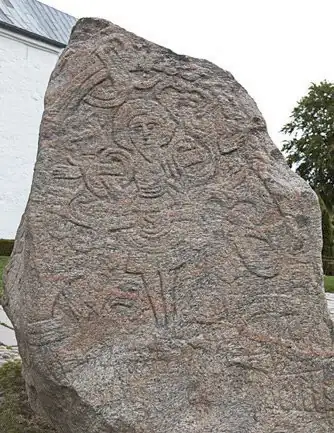
Den store Jellingsten blev rejst af kong Harald Blåtand cirka 965.
1.2 VIKINGETID (ca. 750-1050)
I vikingetiden blev Danmark samlet under én konge, og magten i landet begyndte at blive centraliseret. Vikingerne sejlede på togter ud i Europa, hvor de handlede, plyndrede og slog sig ned. Det var også i denne periode, at de fleste danskere blev kristne.
1.2.1 DET DANSKE RIGE TAGER FORM
Vikingerne beskrives ofte som brutale krigere, og det var nogle af dem også. Men i virkeligheden var langt de fleste i vikingetiden bønder, der dyrkede jorden og holdt dyr, eller de var handelsmænd, der købte og solgte varer. Den første kendte konge, Angantyr, samlede allerede omkring år 700 en del af det område, der senere blev til Danmark.
Selve ordet ”Danmark” kendes fra slutningen af 800-tallet. ”Dan” kommer af ”daner” og betegner det folkeslag, som boede i det danske område. ”Mark” betyder ”grænseområde”. Danmark var altså ”danernes grænseområde”. Første gang, man ser navnet Danmark brugt inden for landets grænser, er på en såkaldt runesten fra cirka år 955 rejst af kong Gorm den Gamle til minde om sin kone Thyra. Ordet runesten kommer af, at teksten på stenen er skrevet med runer, som var vikingetidens skrifttegn. Gorm den Gamles og Thyras søn, Harald Blåtand, regnes som den første konge, der regerede hele Danmark, og han var også konge over dele af Norge. Harald Blåtand rejste også en runesten omkring år 965. Stenene står i dag i byen Jelling i Jylland.
For at sikre sit rige mod fjender opførte Harald Blåtand omkring år 980 en række ringborge i forskellige dele af landet. Mange af disse (for eksempel Aggersborg og Fyrkat i Nordjylland, Nonnebakken på Fyn samt Trelleborg og Borgring på Sjæl land) kan fortsat ses i det danske landskab. Disse militære anlæg var i datidens målestok store byggearbejder. De fortæller os derfor også, at den danske konge på dette tidspunkt havde magt til at indkræve skatter og skaffe store mængder arbejdskraft. Dette viser, at Danmark var ét rige samlet under én central magt.
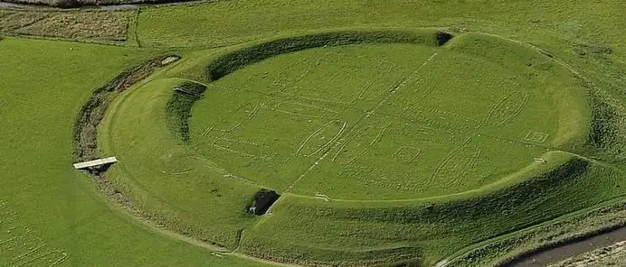
Vikingeborgen Trelleborg ved Slagelse på Vest-Sjælland. Foto: Nationalmuseet.
1.2.2 VIKINGERNES KONTAKT MED OMVERDENEN
Vikingerne havde meget kontakt med udlandet. Udviklingen af vikingeskibene gjorde det muligt at rejse langt for at handle og bosætte sig. Vikingeskibene var nemlig både mere solide og smidige end tidligere tiders skibe. De kunne derfor sejle på havet også under vanskelige forhold, komme hurtigt frem og også sejle op ad floder til byer, der ikke lå ved havet. Vikingerne handlede med resten af Europa og havde også kontakt med de arabiske lande. Men ikke alt var fredelig samhandel. I 800-tallet tog danske vikinger også på togter blandt andet til England og Frankrig og så langt væk som til Konstantinopel (Istanbul). På disse togter udplyndrede de klostre og byer og krævede skat af de lokale.
Under deres togter erobrede vikingerne også store landområder. Nogle vikinger bosatte sig i de områder, som de erobrede, for eksempel i Normandiet i Frankrig. Den danske konge Svend Tveskæg (987-1014) erobrede England, som han blev konge af i 1013. Hans søn Knud den Store (1018-35) var også konge af England, og herskede over Norge på det tidspunkt, hvor vikingeriget var størst. Det store rige faldt dog hurtigt fra hinanden igen. Men vikingernes tilstedeværelse i England har sat varige spor. Blandt andet fordi den engelske befolkning optog mange ord fra vikingernes sprog ”oldnordisk”, som er forløberen for nutidens dansk. Moderne engelsk skønnes at indeholde et par hundrede ord fra oldnor disk. Det gælder for eksempel egg (æg), window (vindue), knife (kniv), law (lov), sell (sælge).
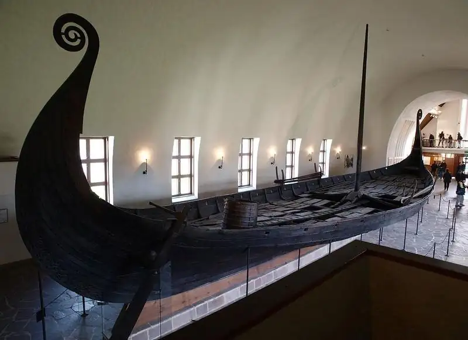
Vikingeskib fra 800-tallet. Foto: Nationalmuseet.
1.2.3 ASATRO
I det danske område dyrkede indbyggerne en nordisk religion, der kaldes asatro. Det betyder troen på aserne, der var guder.
Centralt i asatroen var såkaldte ofringer, ritualer og ceremonier, hvor der blev givet gaver til guderne. Det kunne være smykker, mad, redskaber, men også dyr og mennesker, som blev slået ihjel til lejligheden. Dette kunne foregå i naturen ved særlige helligsteder som i skoven, kilder eller moser eller ved de huse, vikin gerne boede i.
Gudernes konge hed Odin. Han er ofte beskrevet som en ældre mand med kun ét øje og to ravne siddende på skuldrene. Blandt de andre guder i den nordiske myto logi kan nævnes Freja, der var gudinde for frugtbarhed, og torden- og krigsguden Thor, der kørte hen over himlen med sin vogn, hvilket ifølge myten var det, man kunne høre, når det tordnede.
Mange gudenavne fra den nordiske myto logi lever videre i det danske sprog, for eksempel i ugedagenes navne. Onsdag kommer af Odin, torsdag af Thor. Også mange stednavne har rødder i mytologien. Det gælder for eksempel Odense. Navnet kommer af ”Odins vi”, der betyder Odins helligdom. Tórshavn, som er den største by på Færøerne, er naturligvis Thors havn.
Thors hammer, som hedder Mjølner.
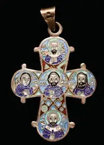
I vikingetiden kom kristendommen til Danmark og erstattede langsomt asatroen. Den tyske missionær Ansgar byggede i midten af 800-tallet kirker i Hedeby og Ribe, og i cirka 965 blev Harald Blåtand døbt. På den runesten, han rejste ved Jelling, står der, at kong Harald vandt sig hele Danmark og Norge og gjorde danerne kristne. Harald Blåtands Jellingsten kaldes derfor ofte for Danmarks dåbsattest.
Dagmarkorset, et smykke med Jesus i midten.
1.3 MIDDELALDER (ca. 1050-1500)
I middelalderen kæmpede kongen, kirken og adelen ofte mod hinanden om magten. Kongemagt og kirke kom dog med tiden til at hænge tættere sammen. Ud over denne udvikling i styreform var middelalderen også en periode med vigtige nyskabelser som Jyske Lov og Danmarkshistoriens værste pestepidemi, Den Sorte Død. Desuden blev hele Norden samlet i én union, Kalmarunionen.
1.3.1 MAGTKAMP MELLEM KONGE, ADEL OG KIRKE
Efter Knud den Stores død i 1035 fulgte en ustabil periode. En række danske konger blev myrdet, og det gjorde kongemagten svagere. For eksempel blev Knud den Hellige (1080-86) dræbt i Sankt Albani Kirke i Odense i 1086 af stormænd, der var de rigeste mænd i landet. Stormændene var utilfredse med, at de skulle betale bøder til kongen, hvis de ikke deltog i militærtjeneste. Mordet på kongen gjorde det klart, at kongerne for fremtiden kun kunne regere, hvis de lavede aftaler med stormændene. Disse aftaler udvik lede sig til egentlige kontrakter om, hvordan magten skulle fordeles mellem kongen og stormændene. Disse kontrakter kaldtes håndfæstninger. Den første håndfæstning blev underskrevet i 1282 af Erik Klipping (1259-86). Den sidste af Frederik 3. i 1648. Den blev siden hen annulleret i forbindelse med indførelsen af det enevældige arvekongedømme i 1660-61.
De første mere end 100 år efter, at Harald Blåtand var blevet døbt som kristen, var kristendommen i Danmark underlagt ærkebiskoppen i Hamborg-Bremen i Tyskland, som de tyske kejsere havde stor indflydelse på. Dette svækkede den danske konge og dermed Danmarks selvstændighed. Men i løbet af 1000-tallet opstod en selvstændig dansk kirke. Den var inddelt i otte stifter, det vil sige geografiske områder, der var administreret af kirken med en biskop som øverste leder.
Bispestav som biskopperne bar i middelalderen som et symbol på deres magt. Foto: Nationalmuseet.
I 1103 fik Lund i Skåne, som indtil 1658 var en del af Danmark, sin egen ærkebiskop med hele Norden under sig. Norden blev dermed et selvstændigt kirkeligt område som en del af den katolske kirke og direkte under paven i Rom – uafhængigt af den tyske kejsers magt.
Nogle hundrede år efter, at kristendommen blev indført, havde kirken fået stor magt. Kirken blev en vigtig del af ethvert menneskes hverdag. Befolkningen skulle betale skat til kirken, som hed ”tiende”, fordi den udgjorde en tiendedel af høsten eller anden produktion. Kirken bestemte i høj grad, hvad man måtte tro på, hvordan man skulle leve og hvad der var rigtige og forkerte (syndige) gerninger.
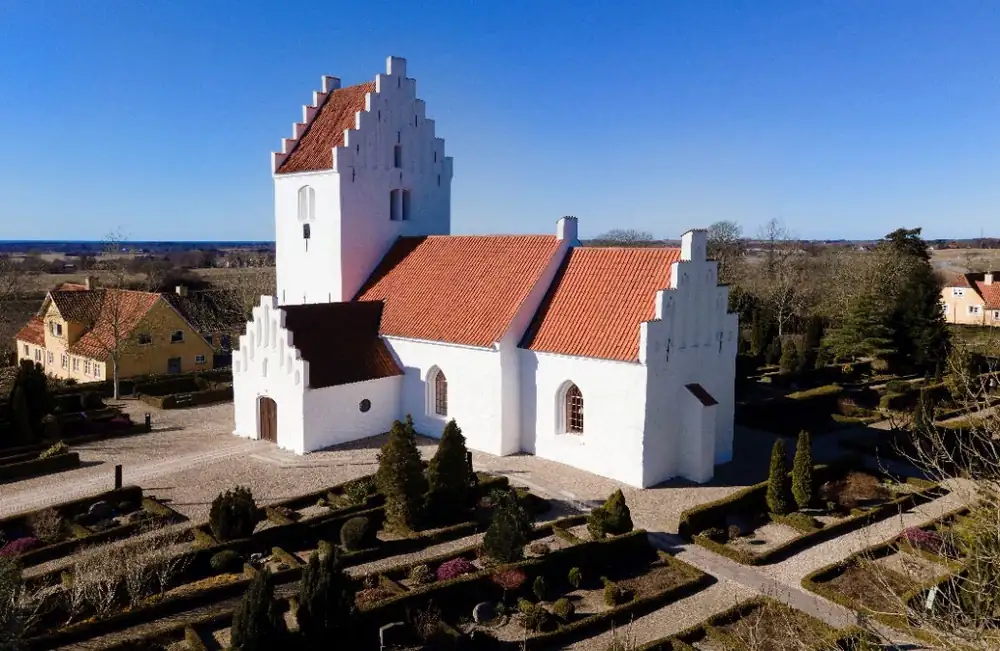
Nørre Asminderup Kirke i Nordvest-Sjælland er en af Danmarks mange kirker fra middelalderen.
Centrum for troen var byens eller landsbyens kirke, og omkring 1250 var der blevet bygget op mod 3.000 kirker i Danmark. Man kom blandt andet i kirken for at bede til Gud eller få tilgivelse af præsten, hvis man i kirkens øjne havde gjort noget forkert (syndet). Tilgivelse for synd kunne ofte fås ved at betale penge til kirken (aflad). Og kirkens messe (gudstjeneste) hver søndag skabte forsoning mellem Gud og mennesker.
Der blev også bygget klostre, hvor munke og nonner kunne leve det perfekte kristne liv. Mange klostre tog sig også af de syge og de fattige. Kirken kom hurtigt til at eje store jordområder i Danmark, og den katolske kirke var en international organisation med stor indflydelse i Europa. Middelalderens danske konger måtte derfor sørge for, at kirken var på deres side.
Fra midten af 1100-tallet til midten af 1200-tallet fik kongemagten fornyet styrke. At kongemagten var stærk kan blandt andet ses i en række love, der blev lavet på denne tid, hvoraf Jyske Lov fra 1241 er den mest kendte.
Det var nemlig nu kongen, der lavede lovene. At der kom love var vigtigt for det danske retssamfund i middelalderen. Tidligere havde slægterne hævnet sig på hinanden, hvis der var begået forbrydelser. Jyske Lov tog afstand fra denne form for blodhævn. Loven ophævede også store dele af den såkaldte sædvaneret, der byggede på uskrevne regler.
Sætningen ”Med lov skal man land bygge” stammer fra indledningen til Jyske Lov. Loven gjaldt først kun i Jylland, men store dele af den blev senere skrevet ind i Danske Lov fra 1683, den første fælles lov for hele Danmark.
Danske konger gennemførte især i 1200-tallet adskillige korstog. Det var mili tære aktioner i området omkring Østersøen for at omvende hedenske folk, det vil her sige ikke-kristne, befolkninger til kristendommen. Et af de mest kendte korstog gik i 1219 til Estland. Det fortælles, at Dannebrog under et slag ved Tallinn faldt ned fra himlen og sikrede, at danskerne vandt slaget.
1.3.2 PEST, GENOPBYGNING OG KALMARUNION
Fra midten af 1200-tallet var Danmark præget af splittelse og borgerkrig, som tog til i styrke i første halvdel af 1300-tallet. Det lykkedes kong Valdemar Atterdag (1340-75) at samle det danske rige igen og genopbygge den danske statsmagt. I Valdemar Atterdags regeringstid hærgede pesten, der blev kaldt Den Sorte Død. Pesten ramte Danmark og resten af Europa omkring 1350 og slog op mod halvdelen af befolkningen ihjel. Tragedien styrkede dog kongens magt. Han inddrog nemlig meget af den jord, der havde tilhørt dem, som døde af pesten.
Efter Valdemar Atterdags død i 1375 blev det hans datter, Margrete 1., der fik magten i landet. Det lykkedes også Margrete at blive regent i Norge, som dengang også omfattede Færøerne, Island og dele af Grønland. Og i 1397 samlede hun Danmark, Norge og Sverige (som dengang også omfat tede Finland) i en union med Danmark som den domine rende magt. Denne union blev kaldt Kalmarunionen, fordi unionstraktaten blev underskrevet i den svenske by, Kalmar. Kalmarunionen blev endeligt opløst i 1523, hvor Sverige rev sig løs for altid. Norge forblev i union med Danmark indtil 1814.
Margrete (1. ) er gravlagt i Roskilde Domkirke. Foto: Lennart Larsen, Nationalmuseet.
1.4 REFORMATION, SVENSKEKRIGE OG ENEVÆLDENS INDFØRELSE (ca. 1500-1700)
Med reformationen i 1536 blev protestantismen indført i Danmark. Det betød samtidig, at kongens magt blev meget større. Kirken, det vil sige det kristne trossamfund, blev lagt ind under kongen i stedet for at være under paven, og kongen overtog kirkens ejendom.
1.4.1 REFORMATIONEN
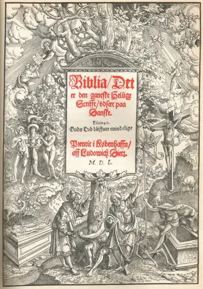
I middelalderen var den danske kirke en del af den katolske kirke, som hørte direkte under paven i Rom. Kirken i Danmark var derfor relativt uafhængig af kongen.
Kirken var en rig og magtfuld institu tion, men omkring år 1500 blev dens magt truet af flere bevægelser, der ønskede at reformere kirken. Disse bevægelser blev kaldt protestantiske.
En af disse bevægelser blev ledet af den tyske munk Martin Luther. Oprøret førte til, at store dele af Nord europa brød med paven. I stedet blev der grundlagt uafhængige protestan tiske kirker i nært samarbejde med de lokale konger og fyrster.
”Christian 3.’s Bibel” er den første over sættelse af Biblen til dansk og udkom i 1550. Foto: Nationalmuseet.
Martin Luthers ideer kom til Danmark i 1520’erne. Det var især præsten Hans Tausen (1494-1561), der udbredte dem. De gik først og fremmest ud på, at man kun kunne opnå frelse ved at tro og ikke ved at gøre gode gerninger eller ved at købe aflad. Diskussionerne om kristendommen udviklede sig i flere danske byer til en folkelig modstand, der var rettet mod den rige og magtfulde katolske kirke.
I 1534 udbrød der borgerkrig i Danmark mellem kirkens katolske magthavere og tilhængerne af protestantismen. Under Christian 3.s (1536-59) ledelse vandt protestanterne i 1536 borgerkrigen. Samme år blev reformationen, det vil sige den religiøse forandring af kirken med udgangspunkt i Martin Luthers prote stantiske lære, formelt gennemført. Danmark blev et protestantisk land, og kongen afsatte de katolske biskopper. Den danske kirke hørte nu under kongen i stedet for under paven. Reformationen medførte, at kirkens politiske magt blev meget mindre.
Den katolske kirke havde ejet meget store værdier og haft meget jord, og alt dette overtog kongen nu. Samtidig lukkede han klostrene. Hidtil havde kirkens sprog været latin, som kun få forstod. Martin Luther mente, at alle skulle have adgang til kristendommen på deres eget sprog. Reformationen indebar derfor, at Biblen nu blev oversat til dansk, og gudstjenester og salmesangen foregik fra nu også kun på dansk.
Reformationen betød også, at det kun var kongen, der kunne udnævne præster og biskopper. På den måde kunne kirken nu bruges til at styrke kongemagten og med den oversatte Bibel også et fælles dansk skriftsprog ud i alle hjørner af det danske rige. På længere sigt fik reformationen afgørende betydning for Danmarks historie, fordi den knyttede stat, kirke, sprog og befolkning tæt sammen. I første omgang blev det begyndelsen til en stærk statsmagt, der i 1660-61 udviklede sig til kongelig enevælde.
1.4.2 CHRISTIAN 4. OG SVENSKEKRIGENE
Christian 4. (1588-1648) var konge i næsten 60 år, og har dermed været konge længere end nogen anden i Danmarkshistorien. Han er også en af de mest betydningsfulde konger. Han havde som andre konger i sin samtid stor interesse for kunst og arkitektur og stod bag en lang række byggerier. I første halvdel af 1600-tallet fik han opført mange bygninger – især i og omkring hovedstaden København. Han fik blandt andet opført kendte bygningsværker som Frederiksborg Slot ved Hillerød, Københavns Børs samt Rosenborg Slot og Rundetårn i København. Han grundlagde også adskillige nye byer – mest uden for det nuværende Danmark som for eksempel Kristianstad i Skåne, Kristiansand i Norge og Kristiania, som nu hedder Oslo og er Norges hovedstad.
Christian 4.
Men Christian 4.s regeringstid var også præget af tabte krige og landområder. Da han overtog regeringsmagten, var Danmark dominerende i området omkring Østersøen; men også Sverige havde store ambitioner for området. Magtba lancen mellem Danmark og Sverige ændrede sig markant, da Christian 4. i årene 1625-29 trak Danmark ind i Trediveårskrigen – en europæisk storkrig, som især foregik i Tyskland (1618-48). Kongen led et stort militært nederlag i 1626, og da Danmark trak sig ud af krigen i 1629, var Sverige blevet den førende magt i østersøområdet.
Det dårlige forhold til Sverige fortsatte i resten af Christian 4.s regeringstid. I 1643 blev Danmark angrebet af Sverige, og i 1645 måtte Danmark blandt andet afstå provinsen Halland i 30 år, øen Gotland i Østersøen og dele af Norge til Sverige. Ved Christian 4.s død i 1648 var Danmark et land i dyb krise, og Sveriges overmagt i forhold til Danmark skulle vare resten af 1600-tallet.
I årene 1657-60 var Danmark i to omgange igen i krig med Sverige. Under den første af disse krige var svenske tropper marcheret op fra en krig i Polen og havde besat Jylland. I den ekstremt kolde vinter 1657-58 lagde der sig et tykt lag is i havet omkring Danmark. Derfor var den danske flåde afskåret fra at forsvare de danske øer. Omvendt kunne svenskerne gå over isen til Fyn og siden til Langeland, Lolland og Sjælland og erobrede store dele af Danmark, som ved en fredsslutning i Roskilde (Roskilde-freden) i 1658 for altid måtte afstå Skåne, Halland og Blekinge samt flere norske områder til Sverige. Bornholm blev også afstået til Sverige ved samme fredsslutning – men øens befolkning iværksatte hurtigt et oprør og fik styrtet det svenske styre på øen, således at Bornholm igen blev dansk.
Senere samme år fortrød den svenske konge, at han ikke havde erobret hele Danmark. Igen blev der krig, og svenskerne belejrede København, det vil sige, at de omringede byen for at få den til at overgive sig. Men med hjælp fra Nederlan dene lykkedes det den danske hovedstad at modstå belejringen, og svenskerne fik ikke erobret flere danske områder. Ligeledes måtte svenskerne acceptere, at Bornholm skulle forblive dansk.
Men tabet af de mange landområder fik store konsekvenser for Danmark. Således et stort tab af befolkning, frugtbar landbrugsjord, værdifuld handel og af en lang kystlinje til Østersøen. Og Danmark kontrollerede nu ikke længere begge sider af Øresund, som er ind- og udsejlingen til Østersøen. Danmark var herefter ikke længere en magtfaktor i Nordeuropa.
1.4.3 ENEVÆLDEN INDFØRES
Oven på de tabte krige til Sverige og landets dårlige økonomi voksede kravet i befolkningen om at afskaffe adelens særlige fordele. Adelen, som udgjorde under én procent af Danmarks befolkning, var stormænd, som typisk var gods ejere, og de havde en række privilegier. De skulle for eksempel ikke betale skat,
de kunne vælge, hvem der skulle være ny konge, når en konge døde. De kunne også med en håndfæstning tvinge den nye konge til at dele magten med dem. Til gengæld for deres privilegier skulle de yde militær støtte til kongen, når der blev krig.
I oktober 1660 fik kong Frederik 3. (1648-70) indført, at adelen fremover skulle betale skat blandt andet til at genopbygge landet efter krigene mod Sverige.
Adelen, som ikke havde været til meget hjælp under krigen, måtte også accep tere, at kongemagten fremover automatisk skulle gå i arv fra den regerende konge til hans nærmeste arving.
Kongen brugte sin nye magt til i 1660-61 at indføre en ny styreform i Danmark, som kaldtes enevælde. Kongen regerede nu landet helt alene. Han kunne nu selv ansætte embedsmænd, indføre love og opkræve skatter uden først at spørge andre om lov. Der opstod en egentlig central statsadministration samt en permanent hær, som kongen kontrollerede.
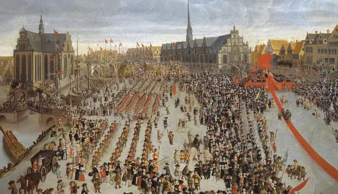
Hyldningen på Københavns slotsplads af Frederik 3. som arvekonge, efter håndfæstningen var blevet annulleret i 1660.
Som det eneste enevældige monarki i Europa fik Danmark i 1665 en grundlov, der var formuleret og skrevet ned. Denne lov kaldtes Kongeloven og fastslog først og fremmest, at kongen havde næsten ubegrænset magt. Kongeloven satte kun meget få grænser for, hvad kongen måtte. Han måtte ikke afgive sin enevældige magt hverken helt eller delvist. Han måtte heller ikke dele konge riget mellem sine børn, men skulle lade det hele gå i arv til tronfølgeren. Endelig skulle han tilhøre den protestantiske kirke, som var blevet skabt med reforma tionen i 1500-tallet med udgangspunkt i Martin Luthers lære.
Kongeloven var grundlaget for kongens enevældige magt helt frem til den første demokratiske grundlov i 1849.
1.5 SØFARTSNATION OG KOLONIMAGT (fra ca. 1620)
I 1600- og 1700-tallet blev Danmark ligesom mange andre vesteuropæiske lande en kolonimagt. Det vil sige, at Danmark erhvervede landområder uden for Danmark og erklærede dem som en del af det danske rige.
Bedre skibe, mere viden om navigation samt vellykkede portugisiske og spanske opdagelsesrejser i 14- og 1500-tallet havde gjort det muligt for europæerne at krydse de store oceaner og sejle til Asien, Amerika og Afrika for at handle og få magt over befolkningerne der. Med disse nye muligheder begyndte et kapløb om kolonier mellem Vesteuropas store lande, hvor Storbritannien med tiden udvik lede sig til den dominerende kolonimagt. Danmark fik også klemt sig ind, hvor det var muligt.
Den danske koloni- og handelsvirksomhed havde ikke mindst blikket rettet mod Asien og oprettede handelskolonier i Trankebar og Serampore i det nuværende Indien. Herfra kunne danske skibe fragte krydderier, salpeter til fremstilling af krudt, bomuldsvarer og andre kostbare varer til Europa. Selvom Danmark ikke etablerede egentlige kolonier i Kina, blev handlen med Kina, hvorfra der blev hentet te, porcelæn og silke, dog den største og mest indbringende for den danske handelsflåde i 1700-tallet.
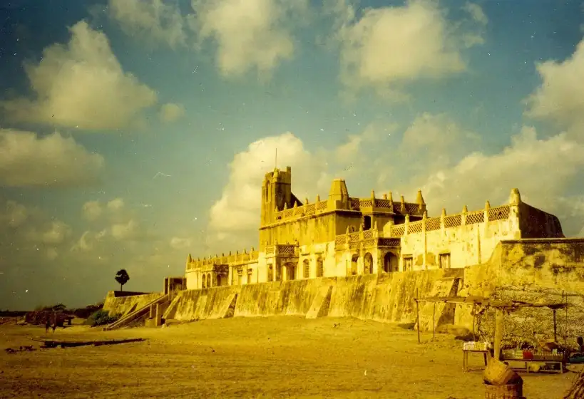
Fæstningen Dansborg i den tidligere danske koloni Trankebar i Indien.
Der blev også bygget danske forter på Guldkysten ved Afrikas vestkyst i det nuværende Ghana, hvorfra i alt over 100.000 slaver blev sejlet til de danske kolonier i Vest-indien (Caribien) – Sankt Thomas, Sankt Croix og Sankt Jan – på den anden side af Atlanterhavet. På de Dansk Vestindiske Øer blev slaverne – ofte med fysisk afstraffelse – tvunget til at arbejde i sukkerrørsplantagerne eller i de europæiske plantageejeres huse. Sukkeret blev transporteret til København, hvor det blev solgt videre enten i Danmark eller i udlandet. Slavehandelen blev forbudt fra 1803, men frem til 1848 var det stadigvæk tilladt at holde slaver på øerne.
Fra 1721 ankom kristne missionærer til Grønland med støtte fra den danske konge. Den første var den norske præst Hans Egede. Ud over at målet var at gøre den grønlandske befolkning kristen, var det også et mål at sælge varer fra Grønland som sælskind, spæk og hvalkød.
Danmark solgte sine kolonier i Indien og Ghana til Storbritannien i midten af 1800-tallet. De Dansk Vestindiske Øer blev solgt til USA i 1917 og går i dag under navnet De Amerikanske Jomfruøer. Grønland har nu selvstyre, men er stadigvæk i et såkaldt rigsfællesskab med Danmark sammen med Færøerne.
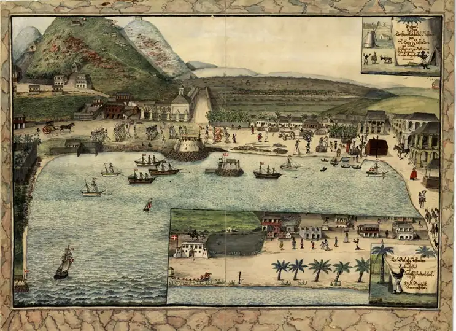
Christiansted på Sankt Croix i 1815, som var den vigtigste by på de Dansk Vestindiske Øer på den tid.
1.6 OPLYSNINGSTID OG VEJEN TIL DEMOKRATI (ca. 1700-1849)
Oplysningstiden i 1700-tallets Europa var en tid, der var præget af store forandringer. Oplysningstiden byggede på den opfat telse, at befolkningen gennem oplysning, tolerance og kritisk tænkning kunne blive friere og bedre mennesker. Fornuften skulle føre til frihed for den enkelte. Sådanne tanker nåede også til Danmark. Det voksende borgerskab i byerne krævede at få del i magten og begyndte at angribe enevælden.
1.6.1 STAVNSBÅND OG LANDBOREFORMERNE
I første halvdel af 1700-tallet var der økonomisk krise i landbruget i Danmark. For at sikre stabil arbejdskraft på godserne indførte kongen stavns båndet i 1733. Stavnsbåndet indebar, at alle bønder, som udgjorde størstedelen af befolkningen, skulle blive på det gods, hvor de var født, indtil de var 40 år. Godsejerne var dermed sikret arbejdskraft. Til gengæld skulle godsejerne stille nogle af deres bønder som soldater til hæren. De fleste bønder i Danmark var på den tid fæstebønder. Det vil sige, at de boede på en af godsejerens mindre gårde. Fæstebønderne skulle både betale afgift til gods ejeren og udføre gratis arbejde på godsejerens jord for at øge produktionen på godserne.
Mod slutningen af 1700-tallet begyndte oplys ningstidens ideer så småt at slå igennem i Danmark.
Kongen, Christian 7. (1766-1808), led af skizo freni og var derfor helt uegnet til at regere. Den tyske læge Johann Friedrich Struensee (173772) vandt kongens tillid og blev ansat som hans personlige læge. I årene 1770-72 fik han stor magt, fordi kongen lod ham regere for sig.
Frihedsstøtten i København, der markerer stavnsbåndets ophævelse i 1788.
Struensee udstedte et stort antal love på kongens vegne. Blandt andet indførte han høj grad af trykkefrihed, afskaffede brugen af tortur for at få mistænkte til at tilstå en forbrydelse. Endelig begrænsede han bøndernes pligt til at arbejde for den lokale herremand.
På mange måder var Struensee foran sin tid i sit forsøg på at modernisere Danmark med udgangspunkt i oplysningstidens tanker. Men han endte med at blive arresteret og henrettet, fordi de gamle magthavere – ministre, embeds mænd, adel og flere fra den øvrige kongelige familie – ikke kunne lide hans reformer. Desuden havde han i øvrigt en kærlighedsaffære med Christian 7.'s dronning, Caroline Mathilde (1751-75), og sammen fik de et barn. Struensees styre varede dermed kun kort, og de fleste af hans reformer blev ophævet igen. Alligevel skulle mange af både hans reformer og oplysningstidens ideer allerede fra 1780'erne igen få betydning for det danske samfund.
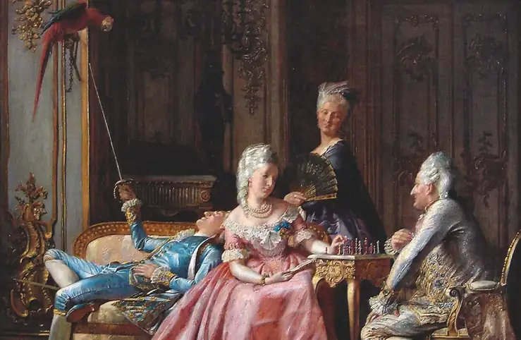
Liggende på sofaen kong Christian 7. Ved bordet dronning Caroline Mathilde samt kongens livslæge Johann Friedrich Struensee. Maleri af Kristian Zahrtmann.
Der blev blandt andet gennemført en række reformer af landbruget og af forhol dene for landbefolkningen. Landboreformerne, som har spillet en stor rolle i udviklingen af både det danske landbrug og det danske samfund, medførte, at landbruget i løbet af 1800-tallet udviklede sig fra et middelalderligt system med fæstebønder til et mere moderne landbrug med selvejende bønder.
Fra 1788 blev stavnsbåndet ophævet. Ophævelsen betød, at fæstebønder selv kunne vælge, om de ville blive boende på det gods, de havde hørt til. Eller om de ville flytte væk derfra. Et vigtigt resultat af reformerne var også, at bønderne fik mulighed for selv at eje jord. Godsejerne solgte nemlig i mange tilfælde jorden til de bønder, som hidtil havde lejet den. Man fordelte i mange tilfælde også lands byens fælles jord mellem de enkelte gårde. På den måde fik den enkelte bonde samlet sine marker på ét sted, så jorden kunne dyrkes mere effektivt.
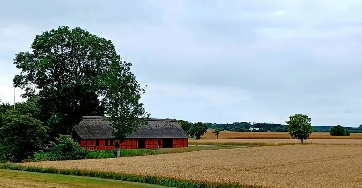
Tidligere lå bøndernes gårde samlet i en landsby. I forbindelse med landbo reformerne blev mange gårde flyttet ud fra landsbyen til bondens egen jord. Denne udflytning præger stadig det danske landskab, idet gårdene ligger spredt i landskabet som her på Bornholm. Foto: Tue Schou Pedersen.
Tidligere lå bøndernes gårde og marker samlet i en landsby. Nu blev mange gårde flyttet ud fra landsbyerne til et stykke jord, som bonden selv kom til at eje. Denne udflytning af gårdene præger stadig det danske landskab.
Landboreformerne skabte en stor gruppe af landmænd med mellemstore gårde – en såkaldte gårdmands-klasse. I Danmark var der forholdsvis flere landbru gere i gårdmandsklassen end i mange andre europæiske lande, hvor nogle få storbønder i form af herremændene ejede det meste af jorden.
Selv om landboreformerne skabte en stor klasse af gårdmænd, var livet på landet dog stadig hårdt for flertallet. Der var ikke jord nok, og jorden var ulige fordelt. Og derfor var det kun et mindretal af bønder, der havde et landbrug, de kunne leve af. Og en voldsom vækst i befolkningstallet gennem 1800-tallet betød, at flere og flere ikke kunne få deres egen jord. Dermed voksede underklassen på landet ved, at de såkaldte husmænd blev flere. De boede typisk i mindre huse og havde kun små eller ingen stykker jord at dyrke eller holde husdyr på. Derfor arbejdede de oftest som landarbejdere på nærliggende gårde eller godser. Mange flyttede ind til byerne for at søge arbejde, og en del emigrerede til Amerika.
1.6.2 DEN FLORISSANTE PERIODE OG ENGLANDSKRIGE
I sidste fjerdedel af 1700-tallet blomstrede dansk søfart, og København udvik lede sig til en international storhavn. Perioden kaldes Den Florissante Periode (’florissant’ betyder ’blomstrende’). Gennem det meste af 1700-tallet var der fred i Danmark, der holdt sig neutral i krigene. Omvendt blev blandt andet Storbritan niens, Frankrigs og Nederlandenes flåder anvendt til krig. Samtidig blokerede disse stormagter hinandens havne og sejlruter. De sendte derfor i stort omfang
deres varer ombord på neutrale danske skibe, som kunne komme frem de fleste steder. Skibene sejlede værdifulde laster til København, hvor de blev videresolgt til andre europæiske lande.
Denne neutralitetshandel bragte således i første omgang store indtægter til landet, men på lidt længere sigt blev samme handel også vejen ind i Napoleonskrigene, hvilket havde katastrofale konsekvenser. I Danmark bliver disse krige også kaldt Englandskrigene, fordi Danmark blev allieret med Frankrig i krig mod England (Storbritannien). Krigene begyndte i 1792 som følge af Den Franske Revolution i 1789.
I krigenes første tid var Danmark neutral og tjente med sin store handelsflåde godt på at sejle varer til både Storbritannien og Frankrig. Handelsflåden blev beskyttet af Danmarks egen krigsflåde, og det var Storbritannien utilfreds med, fordi de ikke ønskede, at Danmark handlede med Frankrig. Derfor angreb og besejrede den britiske flåde den danske flåde i 1801. Slaget kaldes Slaget på Reden, fordi det fandt sted i farvandet lige uden for Københavns havn i det område, der kaldes Københavns Red.
I 1807 ville den franske kejser Napoleon den 1. føre økonomisk krig mod Stor britannien ved at blokere handelsruterne til og fra Storbritannien med krigs skibe. For at forhindre Napoleon i at bruge de danske skibe i blokaden, valgte briterne at erobre hele den danske flåde og bombarderede i den forbindelse København. Begivenheden kaldes Københavns Bombardement. Efter nederlaget blev Danmark tvunget til at vælge side og valgte Frankrig.
Napoleonskrigene endte med, at Danmarks allierede, Frankrig, tabte til de øvrige europæiske stormagter. Det betød, at Danmark ved en fredsaftale i 1814 måtte afgive Norge til Sverige. Over 400 års dansk-norsk union (siden 1380) var dermed bragt til ende.
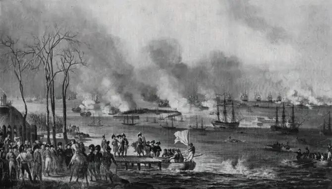
Slaget på Reden 2. april 1801.
1.6.3 VEJEN TIL EN FRI GRUNDLOV
I 1800-tallet blev Danmark påvirket af de folkelige og demokratiske strøm ninger, som blandt andet udsprang af Den Franske Revolution i 1789. I 1848 udbrød der revolution i mange europæiske hovedstæder. Der blev ikke revolu tion i Danmark, men uroen rundt om i Europa påvirkede landet. Borgerskabet i København krævede i marts 1848, at kong Frederik 7. (1848-63) skulle indføre en fri forfatning. Presset af den ophidsede folkestemning valgte kongen at følge kravet.
Han ophævede den enevældige statsform og erklærede sig som konstitutionel konge. Det vil sige, at han skulle regere i samarbejde med folket på baggrund af konstitutionen (grundloven). Den 5. juni 1849 underskrev Frederik 7. Danmarks første frie forfatning, Danmarks Riges Grundlov.
Med grundloven fik Danmark et parlament med to lovgivende forsamlinger, Folketinget og Landstinget, der samlet blev kaldt Rigsdagen. Efter næsten 200 år (siden 1660-61) under enevældige konger fik en del af den danske befolkning nu direkte indflydelse på lovgivningen. Mænd over 30 år med egen husstand (dvs. som enten ejer eller lejer deres egen bolig) kunne vælge medlemmer til Rigs dagen. For at kunne blive valgt til Folketinget skulle man være fyldt 25 år, mens medlemmer af Landstinget skulle være fyldt 40 år og have en høj indkomst. Hverken kvinder eller fattige havde valgret, det vil sige retten til at stemme, eller kunne vælges til Rigsdagens to instanser. Alt i alt medførte Grundloven, at cirka 15 procent af befolkningen over 30 år havde valgret. Ikke desto mindre var grundloven meget demokratisk og liberal sammenlignet med de fleste andre staters forfatninger på den tid.
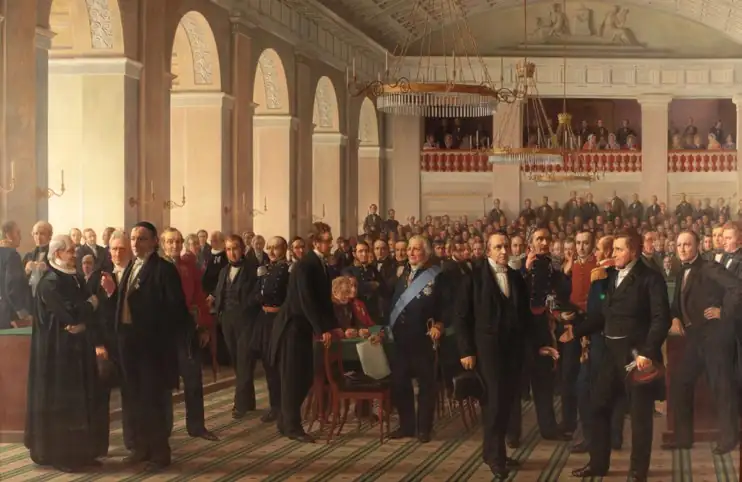
Den Grundlovsgivende Rigsforsamling 1848-49. Maleri af Constantin Hansen (1860-64).
1.7 DE SLESVIGSKE KRIGE (1848-64)
I første halvdel af 1800-tallet voksede nationalbevidstheden i Europa, herunder i Danmark. Det samme gjorde modsætnings forholdet mellem dem, der følte sig henholdsvis danske og tyske i det danske rige. Det udløste i 1848-50 en borgerkrig mellem kongeriget Danmark og tysksindede oprørere i hertug dømmerne Slesvig og Holsten, hvor den danske konge også var regent. Danmark vandt krigen i første omgang, men problemet var ikke løst. I 1864 udløste de nationale spændinger igen en krig. Denne gang vandt tyskerne, og Danmark mistede både Slesvig og Holsten.
1.7.1 DEN 1. SLESVIGSKE KRIG
Den danske helstat bestod i midten af 1800-tallet af det danske kongerige samt hertugdømmerne Slesvig og Holsten. Den danske konge regerede i alle tre dele af riget
Den øgede nationalfølelse og de demokratiske tanker skabte spændinger mellem den dansktalende og den tysktalende del af befolkningen. Befolkningen i Holsten var tysk, og de fleste danske politikere så det som naturligt, at holstenerne gerne ville rive sig løs fra Danmark og tilslutte sig Det Tyske Forbund, men i Slesvig var der både dansktalende, som ville forblive en del af Danmark, og tysktalende indbyggere, som ville løsrive sig og tilslutte sig Det Tyske Forbund sammen med Holsten. Det kaldtes det slesvigske problem. Folk og politikere på begge sider af grænsen diskuterede, hvor den danske grænse skulle gå.
I 1848 fik Slesvig og Holsten afslag på deres krav om en selvstændig fri forfat ning for Slesvig og Holsten. Omvendt stod det klart, at Danmark ønskede, at den danske grundlov, der var på vej, også skulle gælde for Slesvig, som dermed ville blive forenet med Danmark men adskilt fra Holsten. Disse modstridende ønsker førte til borgerkrig mellem slesvigske og holstenske oprørere på den ene side og Danmark på den anden side.
Det Tyske Forbund og den stærkeste af de tyske stater, Preussen, bakkede op og sendte et stort antal soldater ind i krigen på hertugdømmernes side.
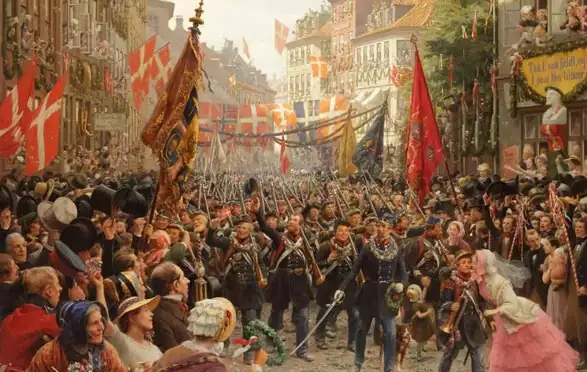
Soldater fra de slesvigske krige modtager hyldest af befolkningen.
I 1849 udkæmpede Danmark og slesvig-holstenerne en række slag. Et af dem var ved Fredericia i juli, hvor den danske hær sejrede. I 1850 blev Det Tyske Forbund og Preussen presset af Rusland til at trække deres hjælpetropper ud af konflikten. Derefter vandt den danske hær en række afgørende sejre, blandt andet ved Isted i juli 1850. Det var det blodigste slag under krigen med tusindvis af døde og sårede. Efter en mægling fra de europæiske stormagter blev resultatet, at de to hertugdømmer fortsat skulle indgå i den danske helstat. Den løsning skulle vise sig ikke at holde længe. Treårskrigen i perioden 1848-50 kaldes også Den 1. Slesvigske Krig.
1.7.2 DEN 2. SLESVIGSKE KRIG
Efter Den 1. Slesvigske Krig havde Danmark lovet stormagterne, at Danmark ikke ville binde Slesvig tættere til sig end Holsten. Men Danmark brød sit løfte. I 1863 vedtog den danske rigsdag presset af folkestemningen en ny fælles forfat ning for både Danmark og Slesvig, men ikke for Holsten. De tyske stater opfat tede den dansk-slesvigske forfatning som et brud på den aftale, der var indgået. Preussen, hvis politiske leder var den magtfulde ministerpræsident Otto von Bismarck, erklærede derfor sammen med Østrig krig mod Danmark i februar 1864. Denne krig kaldes Den 2. Slesvigske Krig.
I modsætning til den 1. Slesvigske Krig i 1848-50 fik Danmark denne gang ikke hjælp af de europæiske stormagter. Danmark blev angrebet sydfra, og de danske styrker forventede, at Dannevirke ville beskytte dem mod angrebet. Dannevirke var et forsvarsanlæg, som siden vikingetiden havde været en stærk forsvars linje. Men i februar 1864 måtte den danske hær evakueres i al hast fra Danne virke, fordi modstanderne var i overtal.
Dele af den danske hær trak sig nordpå i Jylland. Hovedparten af soldaterne holdt dog forsvarsstillingen ved Dybbøl nær Sønderborg. Den 18. april angreb preusserne Dybbøl efter et langvarigt bombardement, og de underlegne danske styrker led nederlag. Hele Jylland blev besat af fjendtlige styrker, og da preus serne i slutningen af juni også erobrede øen Als, måtte de danske politikere indse, at krigen var tabt.
Nederlaget i 1864 var en katastrofe for Danmark. Danmark måtte afstå Slesvig, Holsten og det lille hertugdømme Lauenborg til Preussen og Østrig.
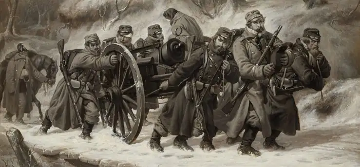
Danske soldaters tilbagetrækning fra Dannevirke i 1864.
Den danske konge havde med ét mistet cirka to femtedele af sin befolkning og en tredjedel af sit territorium, som derefter bestod af det egentlige Danmark samt en række sparsomt befolkede lande: Grønland, Færøerne og Island samt – indtil 1917 – de tre små dansk-vestindiske øer.
Dermed fik riget efter 1864 en mere ensartet befolkning end nogensinde før. Langt hovedparten af befolkningen talte samme sprog, havde samme forfatning og var kulturelt ret ens, selv om der stadig var stor forskel på rig og fattig. I modgangen efter nederlaget i 1864 voksede den danske nationale identitet sig endnu stærkere, og sprog og kultur kom til at betyde meget. Mange sønderjyder boede nu i det tyske kejserrige syd for grænsen, men følte sig danske. Først i 1920 blev de dansksindede områder i den nordlige del af Slesvig genforenet med Danmark.
Krigen og tabet af hertugdømmerne i 1864 betød, at Danmark nu ubetinget var reduceret til en småstat helt uden indflydelse på de europæiske stormagters beslutninger. Bismarck havde i 1871 samlet de tyske stater i et stærkt kejser rige, og Danmark stod nu helt i skyggen af sin store nabo mod syd. Der var nu stor bekymring for, at Danmark ville blive helt udslettet som en selvstændig stat. For at sikre fortsat overlevelse søgte Danmark for næsten enhver pris at undgå at involvere sig i internationale konflikter. Sikkerhedspolitisk valgte Danmark derefter at være strengt neutral og opretholdt kun et svagt militært forsvar.
1.8 INDUSTRIALISERINGEN OG NYE POLITISKE BEVÆGELSER (1864-1914)
Slutningen af 1800-tallet og begyndelsen af 1900-tallet var præget af en omfattende modernisering af det danske samfund. Der kom gang i en industriel udvikling, velstanden steg, og nye politiske reformer skulle sikre en mere fri økonomi. Indenrigs politisk opstod der en markant konflikt mellem godsejerpar tiet Højre og bondepartiet Venstre, og en række nye politiske bevægelser som arbejderbevægelsen, andelsbevægelsen og kvindebevægelsen så dagens lys.
1.8.1 DEN FØRSTE INDUSTRIALISERING OG ARBEJDERBEVÆGELSEN
Industrialiseringen begyndte så småt i England allerede i midten af 1700-tallet. De vigtigste årsager til industrialiseringen var udviklingen af dampmaskinen, de første jernbaner i begyndelsen af 1800-tallet samt adgangen til energi i form af store kulreserver. Den første jernbane inden for Danmarks nuværende grænser åbnede i 1847 og kørte mellem København og Roskilde. Men industria liseringen slog først for alvor igennem i sidste halvdel af 1800-tallet, og først efter 2. Verdenskrig gik Danmark fra at være et landbrugssamfund til at blive et egentligt industrisamfund.
Den begyndende industriali sering fik store dele af befolk ningen til at flytte fra landet og ind til byerne for at arbejde i industrien eller med hånd værk. Dermed opstod en helt ny samfundsgruppe af arbej dere. De arbejdede ofte på de nye fabrikker eller værksteder i byen og boede i små lejligheder i store etageejendomme.
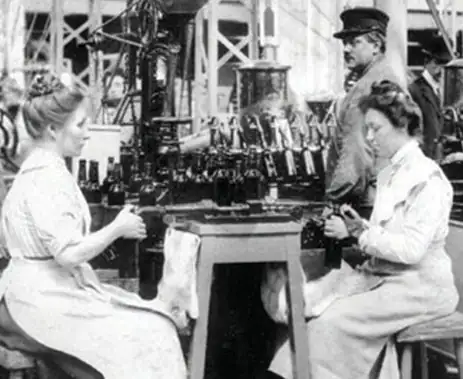
Arbejde på bryggeri omkring år 1900.
De mange arbejdere i industrien havde fælles interesser. De ville blandt andet sikre sig den højest mulige løn for arbejdet, rimelige arbejdstider og bedre sikkerhed på arbejdspladserne. De mange arbejdere begyndte at samle sig. I oktober 1871 blev den ’Den internationale Arbejderforening for Danmark’ grundlagt som en del af den internationale socialistiske bevægelse, der søgte at påvirke arbejdere i mange lande. I aviser og på løbesedler opfordrede bevægel sens ledere til strejker og demonstrationer for at kræve bedre vilkår og højere løn til arbejderne.
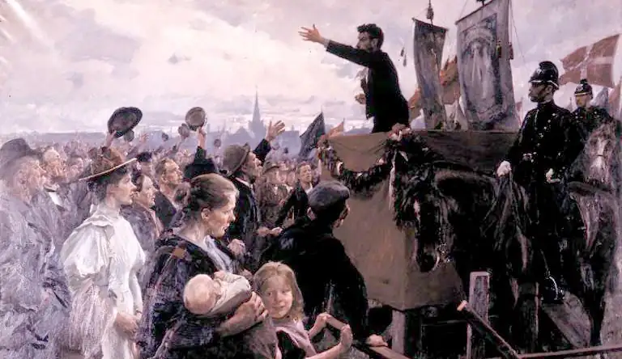
Politisk møde i arbejderbevægelsen omkring 1870.
Arbejdsgiverne fastholdt på deres side retten til at lede og fordele arbejdet. Perioden var derfor præget af strejker og sammenstød. Det mest kendte sammenstød mellem demonstrerende arbejdere og myndighederne var Slaget på Fælleden, der fandt sted i maj 1872. Det var et stort arbejdermøde i København, som endte i kampe mellem politi og soldater på den ene side og arbejdere på den anden. Ingen blev dræbt på Fælleden, men mange blev fængslet.
Der opstod også et politisk arbejderparti, Socialdemokratiet. Det var i begyn delsen en del af arbejderbevægelsen, men blev i 1878 et selvstændigt parti. I 1884 blev de to første socialdemokrater valgt ind i Folketinget.
En langvarig strid i 1899 mellem arbejdsgivere og arbejdere endte i september samme år med en historisk aftale, Septemberforliget, mellem arbejdsmarkedets to hovedorganisationer – der i dag hedder DA (Dansk Arbejdsgiverforening) og FH (Fagbevægelsens Hovedorganisation). Med aftalen bevarede arbejdsgiverne deres ret til at lede og fordele arbejdet, og arbejderne fik ret til at organisere sig og varetage deres interesser kollektivt via fagforeninger og tillidsmænd – for eksempel forhandle løn og arbejdsvilkår eller strejke efter nærmere bestemte regler. Septemberforliget ligger stadig til grund for den måde, man laver aftaler på det danske arbejdsmarked. Den måde at aftale tingene på i Danmark kaldes ”Den Danske Model”.
1.8.2 ANDELSBEVÆGELSEN
Mens industrien voksede i byerne, skete der også forandringer på landet. I midten af 1800-tallet havde Danmark eksporteret store mængder korn til udlandet. Situationen ændrede sig imidlertid i midten af 1870’erne. Nu gjorde dampskibe og jernbaner det muligt for USA og de østeuropæiske lande at eksportere billigt korn til Vesteuropa, hvilket fik kornpriserne til at falde drastisk. Derfor valgte de danske landmænd i høj grad at omlægge til animalsk produktion. Det vil sige opdrætte for eksempel kvæg og svin for at producere blandt andet smør og bacon, som hurtigt blev Danmarks klart største eksportvarer. Det vigtigste marked var Storbritannien, som alene aftog over halvdelen af den animalske fødevareeksport i perioden 1890-1914.
En del af denne succes skyldtes andelsbevægelsen, som i samme periode kom til Danmark. Den danske andelsbevægelse var en del af en international bevæ gelse, der var opstået i England i 1840’erne under navnet ’The Co-operative Movement’ (Den kooperative bevægelse). Andelsbevægelsen fik dog ekstraor dinær stor udbredelse i Danmark i sammenligning med andre lande. Bønderne slog sig sammen om at oprette blandt andet mejerier og brugsforeninger. Her samarbejdede de om indkøb og produktion, og de delte overskuddet i forhold til hvert enkelt medlems omsætning.
Samtidig kunne bønderne via andelsbevægelsens virksomheder forbedre varernes kvalitet.
Et bærende princip i andelsbevægelsen var, at medlemmer stemte efter ”hoveder, ikke høveder”. Det betød, at en landmand (et hoved), som kun havde få dyr (høveder), formelt set bestemte lige så meget som en storbonde med mange dyr. Der blev også oprettet andelsslagterier, som sikrede landmændene kontrol med både produktion og afsætning af deres kød. Andelsbevægelsen har betydet meget for dansk landbrugs udvikling og for Danmark som helhed. De demokra tiske principper og tanken om lighed, der lå til grund for andelstanken, er senere blevet en vigtig del af det moderne danske samfund. Der findes stadig mange andel svirksomheder – for eksempel Coop og Arla – selv om de fleste efterhånden har fjernet sig meget fra deres oprindelige grundlag, både hvad angår størrelse og ledelsesform.
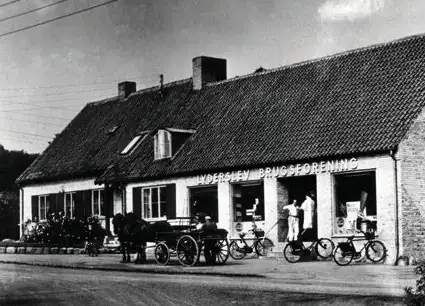
Brugsen i Lyderslev.
Også arbejderbevægelsen oprettede virksomheder, der byggede på andelstanken. De blev kaldt kooperative virksomheder. Det var for eksempel bryggerier, der producerede på lige vilkår med andre virksomheder, men det var arbejderne eller forbrugerne selv, der ejede dem. Virksomhederne skulle ikke give overskud til ejerne ligesom almindelige virksomheder. Langt de fleste af arbejderbevægelsens virk somheder er i dag udkonkurreret af de private virksomheder.
1.8.3 PARLAMENTARISMENS GENNEMBRUD
Krigen i 1864 var ikke kun et militært, men også et politisk nederlag for det nationalliberale borgerskab. Borgerskabet i byerne havde nemlig ikke bare stået i spidsen for kampen for en demokratisk grundlov, men også den nationale linje, som havde ført Danmark ind i krigen. Derfor stod borgerskabet svagt.
Dette spillede magten i hænderne på konservative kredse bakket op af landets godsejere. I 1866 fik de gennemført en ændring af grundloven, som indebar et demokratisk tilbageskridt. Kongen og de mænd, der havde de højeste indtægter, fik nu ret til at vælge de fleste pladser i Rigsdagens ene kammer, Landstinget. Den noget bredere adgang til at stemme blev dog bevaret til Folketinget. Men den nye grundlov anviste ikke, hvordan der skulle handles, når Folketinget og Landstinget, som nu havde to ret forskellige vælgerbefolkninger – og dermed to forskellige politiske flertal – ikke kunne blive enige.
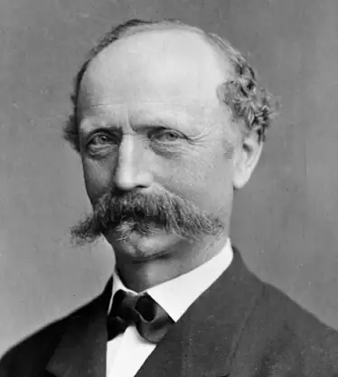
I slutningen af 1800-tallet blev den politiske strid hårdere mellem Rigsdagens højre- og venstre kræfter. Begge parter mente, at det var dem, som havde grundloven på deres side. Perioden kaldes derfor for ’Forfatningskampen’. De orga niserede sig omkring 1870 i to politiske partier, Højre og Venstre. Partiet Venstre, der repræsenterede bønderne, havde flertal i Folketinget. Det konservative parti Højre havde flertal i Landstinget. I denne periode gennemførte Højre-regeringer, der var udpeget af kongen og ledet af godsejeren J.B.S. Estrup, en lang række såkaldte provisoriske (forelø bige) finanslove, selv om regeringen var i mindretal i Folketinget. Folke tinget, der var domineret af Venstre, søgte til gengæld at blokere rege ringens politik. Resultatet blev, at al lovgivningsarbejde gik i stå.
Godsejer Jacob Brønnum Scavenius Estrup fra partiet Højre var Danmarks konseilspræsident (regeringsleder) fra 1875 til 1894. Foto: Det Kongelige Bibliotek.
Først med Systemskiftet i 1901 blev den fastlåste situation brudt, og det parla mentariske princip blev indført. Ifølge det parlamentariske princip er det alene Folketinget, der bestemmer, hvem der skal have regeringsmagten. En regering må ifølge dette princip ikke have et flertal i Folketinget imod sig. 1901 blev et vendepunkt for det danske demokrati. Det parlamentariske princip blev dog først indskrevet i grundloven, da den blev ændret i 1953.
Efter lange politiske kampe overtog Venstre for første gang regeringsmagten i 1901. Men i takt med at det danske samfund udviklede sig, kom der flere poli tiske partier til. Et af dem var Det Radikale Venstre. Det blev dannet i 1905 af udbrydere fra Venstre. Det var især akademikere og husmænd, der stemte på det nye parti.
I 1915-16 reorganiserede det gamle godsejerparti Højre sig under navnet Det Konservative Folkeparti. Partiet markerede dermed, at det ønskede at tiltrække andre vælgere end blot landets godsejere og det velhavende borgerskab, og at det nu anerkendte det parlamentariske princip og den lige valgret.
Skillelinjerne i dansk politik ændrede sig også i begyndelsen af 1900-tallet, således at de primært drejede sig om den økonomiske politik. På den ene side stod Socialdemokratiet, der lagde stor vægt på økonomisk omfordeling mellem rig og fattig. På den anden side var der de borgerlige partier Venstre og Det Konservative Folkeparti, som i højere grad ønskede lave skatter og økonomisk frihed. I midten af denne diskussion stod Det Radikale Venstre. Partiet har i sin historie dog samarbejdet mest med Socialdemokratiet.
1.8.4 KVINDEBEVÆGELSEN
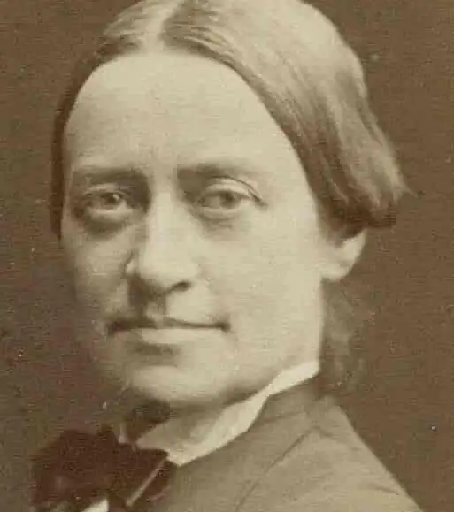
Det var også i slutningen af 1800tallet, at ligestillingskampen for alvor tog sin begyndelse. Foreningen Dansk Kvindesamfund – Danmarks ældste kvindeorganisation – blev stiftet i 1871. Den var afgørende for, at der frem mod 1920’erne skete en række store fremskridt i kvinders rettigheder. Som eksempler herpå fik kvinder i 1875 adgang til at få en studentereksamen og til at komme på universitetet. Studentereksamen måtte dog tages ved private pige skoler frem til 1903, hvor de offent lige gymnasier også blev åbnet for piger. I 1880 fik gifte kvinder ret til at hæve og bruge deres egen løn.
Nathalie Zahle (1827-1913) var en forkæmper for kvinders ret til uddannelse og selvstændighed. Hun grundlagde i 1877 en pigeskole "N. Zahles Skole" i København. Foto: Det Kongelige Bibliotek.
I 1921 fik kvinder lige adgang til de fleste offentlige stillinger – undtagen i forsvaret og som præster.
Endvidere var det på en international, socialistisk kvindekonference i 1910 i ”Folkets Hus” på Jagtvej på Nørrebro i København (det senere ”Ungdomshuset”), at det blev besluttet, at der skulle være en international kampdag for kvinder. Fra 1921 fik markeringen en fast årlig dato den 8. marts, som i dag er kvindernes internationale kampdag i mange lande verden over.
En afgørende udvikling i denne periode var, at danske kvinder fik valgret. I 1903 havde de fået valgret, men kun til folkekirkens menighedsråd. Fra 1908 fik kvin derne også valgret til sogne- og byråd. Og endelig i 1915 – med ikrafttræden i 1918 – blev grundloven ændret, så danske kvinder fik valgret til Rigsdagens to kamre, Folketinget og Landstinget. Dermed fulgte Danmark tendensen i andre europæiske lande, hvor kvindebevægelser også havde presset på for at sikre kvinder politisk indflydelse på lige fod med mænd. På verdensplan var Danmark blandt de første lande til at indføre valgret for kvinder ved parlamentariske valg. Ved samme grundlovsændring fik tjenestefolk, det vil sige personer uden egen husstand, som tjente og boede hos en anden familie, også valgret til både Folke tinget og Landstinget. Således blev valgretten udvidet fra at have omfattet et mindretal til at omfatte flertallet af befolkningen.
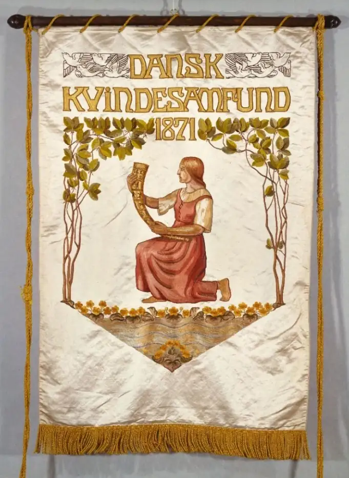
Vimpel fra Dansk Kvindesamfund.
1.9 VERDENSKRIG, KRISER OG SOCIALREFORMER (1914-40)
1914-18 rasede 1. Verdenskrig mellem Europas stormagter. Danmark undgik at blive direkte involveret. De efterfølgende år var præget af en højst dødelig influenzaepidemi samt politisk uro både i Danmark og resten af verden. Mange europæiske lande udviklede sig til diktaturstater. I 1930’erne var verden i dyb økonomisk krise. Også i Danmark voksede arbejdsløsheden kraftigt. Det udløste mange konflikter på arbejdsmarkedet og gav Socialdemokratiet stor opbakning. Det motiverede også de gamle partier til sammen at finde løsninger, som var med til at sikre, at antidemokratiske ideologier aldrig for alvor vandt tilslutning i Danmark.
1.9.1 FØRSTE VERDENSKRIG (1914-18)
I 1914 brød 1. Verdenskrig ud. De største europæiske magter blev inddraget i krigen: På den ene side stod Tyskland, Østrig-Ungarn og Osmannerriget, og på den anden side stod Frankrig, Rusland, Storbritannien, Italien og siden også USA. Det neutrale Danmark lå geografisk tæt på krigens fronter, men blev ikke direkte berørt af verdenskrigen.
Efter pres fra Tyskland valgte Danmark dog i 1914 at lægge miner ud i nogle af de danske farvande. Tysklands formål var at forhindre britiske krigsskibe i at sejle ind i Østersøen og dermed true Tyskland derfra. Men minefelterne kunne også hindre tyske skibe i at sejle gennem de danske stræder. Én dansk befolkningsgruppe blev særligt involveret i 1. Verdenskrig. Det var de dansksindede slesvigere syd for grænsen, som var blevet tyske statsborgere efter Danmarks tab af Slesvig i den 2. Slesvigske Krig i 1864.
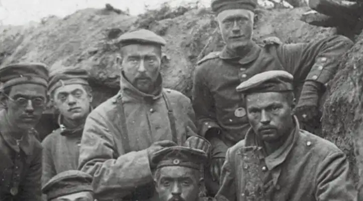
Danske soldater som deltog i første verdenskrig.
I alt døde cirka 6.000 danske sønderjyder i tysk krigstjeneste under 1. Verdenskrig. Også de danske kolonier i Vestindien kom i fokus på grund af krigen. USA frygtede, at Tyskland skulle besætte Dansk Vestindien, og tilbød derfor i 1915 den danske rege ring at købe Sankt Thomas, Sankt Croix og Sankt Jan (på engelsk Sct. John). Efter en folkeafstemning i Danmark blev øerne i 1917 solgt for 25 millioner. dollars; til gengæld for salget anerkendte USA’s regering, at Grønland fuldt og helt hørte under Danmark.
1.9.2 DEN SPANSKE SYGE
Hen mod slutningen af krigen i 1918 blev verden og Danmark ramt af en meget aggressiv, smitsom og dødbringende influenzavirus, som fik navnet ”Den Spanske Syge”. Sygdommen opstod slet ikke i Spanien, men fik sit navn, fordi det var spanske aviser, som først skrev om den. Eftersom Danmark ikke deltog direkte i 1. verdenskrig, var landet bedre rustet til at bekæmpe sygdommen med en befolkning, som var bedre ernæret, og et sundhedsvæsen, som var mindre belastet end de mange krigsførende landes.
Men alligevel kunne danske myndigheder ikke gøre meget. Man vidste kun lidt om sygdommen og kunne for eksempel ikke udvikle en vaccine. Mange influenzapa tienter fik også lungebetændelse oveni, som man, før penicillinen blev opdaget i 1928, ofte døde af.
Sundhedsstyrelsen forsøgte via løbesedler at give befolkningen råd om blandt andet god hygi ejne og om at undgå kontakt med hinanden, ligesom nogle skoler og forlystelser lukkede ned. Men alt dette var ikke nok til at få kontrol med sygdommen, som ramte landet i flere bølger i perioden 1918-20. Specielt for Den Spanske Syge er også, at den i høj grad slog relativt unge mennesker ihjel. De fleste døde var mellem 20 og 40 år. I alt tog sygdommen op mod 50 millioner menneskeliv, herunder cirka 15.000 i Danmark.
Opfordringer fra Sundhedsstyrelsen mod udbredelsen af ’Den Spanske Syge’ i 1918.
1.9.3 GENFORENINGEN OG FORFATNINGSKRISEN
Tyskland tabte 1. Verdenskrig. Det gjorde det muligt for Danmark at kræve de primært dansksindede områder af Slesvig tilbage. I 1920 stemte befolkningen i Nordslesvig og Mellemslesvig ved to forskellige afstemninger om, hvorvidt den ønskede at tilhøre Tyskland eller Danmark. Afstemningen i Nordslesvig fandt sted i februar 1920.
Et stort flertal stemte for, at Nordslesvig skulle genforenes med Danmark. Ved afstemningen i marts 1920 i Mellemslesvig, hvor Flensborg var den største by, bestemte et stort flertal derimod, at området skulle forblive under Tyskland.
Den 15. juni 1920 blev grænsen formelt flyttet sydpå fra Kongeåen til den nuværende grænse mellem Danmark og Tyskland. Nordslesvig – nu kaldet Sønderjylland – blev dermed genforenet med Danmark.
Man kalder Sønderjyllands tilbagevenden til Danmark for Genforeningen. Men der er dog stadig et tysk mindretal (i 2020 på cirka 15.000) på den danske side af grænsen og et dansk mindretal (i 2020 på cirka 50.000) på den tyske side. Disse mindretals rettigheder blev i 1955 lagt fast i København-Bonn-erklæringerne, hvilket har sikret en fredelig udvikling i grænselandet.
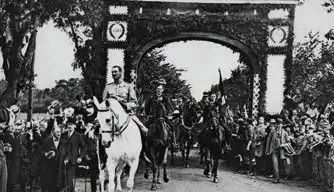
Christian 10. rider over grænsen i 1920.
Kort før Genforeningen oplevede Danmark i forbindelse med Påskekrisen sin alvorligste forfatningskrise i nyere tid. Inden da havde kong Christian 10. (191247) og regeringen i længere tid været uenige. Det var især uenigheden om den nye grænse til Tyskland, der udløste Påskekrisen.
Kongen mente, at regeringen – på trods af afstemningsresultaterne – skulle forsøge at få mere af Slesvig tilbage til Danmark end blot Nordslesvig. Dette afviste regeringen. I påsken 1920 afskedigede Christian 10. regeringen på grund af denne uenighed. Dette skete, selvom regeringen ikke havde et flertal imod sig
i Folketinget. Kongens optræden under Påskekrisen i 1920 udløste store demon strationer og politiske protester, og den blev af dele af dagspressen betegnet som et statskup. Flere begyndte at tale om helt at afskaffe monarkiet. Krisen drev over, da kongen og de politiske ledere efter intense forhandlinger blev enige om at udpege en ny midlertidig regering og udskrive nyvalg. Siden da har kongemagten ikke blandet sig direkte i politik.
1.9.4 ØKONOMISK KRISE OG SOCIALREFORMER
I 1917 tog bolsjevikkerne (kommunisterne) magten i Rusland, som blev omdannet til Sovjetunionen. Fascismen og nazismen vandt frem i for eksempel Italien (1922) og i Tyskland (1933), og mange andre europæiske lande fik auto ritære regimer i løbet af 1920’erne og 1930’erne. Alt sammen var det udtryk for en bevægelse i en ikke-demokratisk retning. Men i Danmark lykkedes det at fastholde demokratiet.
Samtidig indtraf en meget alvorlig international økonomisk begivenhed i denne periode. Det var børskrakket på Wall Street i New York i oktober 1929. Aktiekur serne faldt voldsomt, og den økonomiske krise spredte sig til resten af verden. I Danmark blev især landets største erhverv, landbruget, hårdt ramt af krisen. Priserne på korn og kød faldt dramatisk. Tusindvis af landmænd blev tvunget til at sælge deres gårde, fordi de ikke tjente penge nok. Arbejdsløsheden steg voldsomt og nåede op over 30 procent i begyndelsen af 1930’erne.
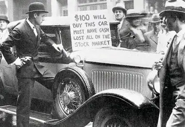
Børskrakket i 1929 på Wall Street, New York.
I 1924 var cigarsortereren Thorvald Stauning blevet Danmarks første social- demokratiske statsminister.
I denne regering, som varede to år frem til 1926, indgik også landets første kvindelige minister. Hun hed Nina Bang og var undervisningsminister. I 1929 dannede Social- demokratiet igen regering – denne gang sammen med Det Radikale Venstre. Regeringen forsøgte at mildne krisen ved forskellige indgreb. Den 30. januar 1933 – tilfældigvis samme dag som Adolf Hitler blev rigskansler i Tyskland – indgik regeringen og Venstre det såkaldte Kanslergadeforlig, der fik dette navn, fordi de afgørende forhandlinger fandt sted i statsminister Thorvald Staunings bolig i Kanslergade i København.
Kanslergadeforliget var et vidtgående forlig, der tog hensyn til både arbejds givernes og arbejdernes interesser. Forliget forhindrede lavere løn til arbejderne, men forbød strejker i et år. Det var også nødvendigt at støtte landbruget, der var hårdt ramt af den økonomiske krise. Forliget gjorde det nemmere for land mænd at låne penge, så de undgik at gå fallit. Samtidig blev den danske krone devalueret, det vil sige, at dens værdi blev sænket. Dette gjorde det nemmere at sælge landbrugsvarer til Storbritannien.
Og som led i forliget blev der også gennemført en såkaldt socialreform, der udvidede befolkningens sociale rettigheder og skabte mere ensartede regler for, hvornår den enkelte borger kunne få økonomisk hjælp af det offentlige – for eksempel som følge af arbejdsløshed eller sygdom.
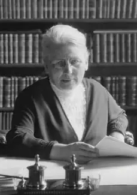
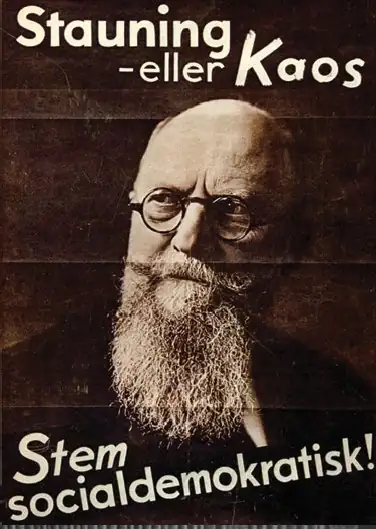
Danmarks første socialdemokratiske statsminister Thorvald Stauning. Her på en valgplakat fra 1935.
Danmarks første kvindelige minister Nina Bang.
1.10 DANMARK BESAT AF TYSKLAND (1940-45)
Hitlers angreb på Polen i september 1939 medførte, at Stor britannien og Frankrig erklærede Tyskland krig. Dermed var 2. Verdenskrig brudt ud i Europa. Danmark var besat af Tyskland fra 1940 indtil krigens afslutning i 1945. Danmark samarbej dede med tyskerne for at mildne besættelsesvilkårene, men under krigen voksede en dansk modstandsbevægelse frem. Samtidig lykkedes det for Danmark at redde langt de fleste af landets jøder fra Nazi-Tysklands folkemord, Holocaust.
1.10.1 BESÆTTELSE OG SAMARBEJDE
Danmark og Norge blev angrebet og besat af det tyske militær den 9. april 1940. Den tyske forklaring var, at Tyskland ville beskytte de to lande mod britisk besæt telse. Men Tysklands besættelse af Danmark skyldtes især, at man var interes seret i Norge. Den tyske krigsførelse var afhængig af leverancer af jernmalm fra Nordsverige, som skulle udskibes gennem byen Narvik på den isfri, norske atlanterhavskyst. Den forsyning af råvarer havde briterne også vist interesse for.
Desuden ønskede Tyskland sin adgang til verdenshavene sikret via Norges langstrakte kyst. Da Danmark er det land, som ligger mellem Norge og Tysk land, havde tyskerne brug for at have adgang til flyvepladsen i Aalborg som mellemstation. Endeligt gjorde Danmarks placering ved Nordsøen landet til en uundværlig del af det tyske forsvarsværk mod en eventuel allieret invasion af den europæiske vestkyst.
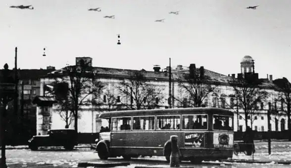
Tyske fly over København den 9. april 1940.
Tidligt om morgenen den 9. april blev angrebet indledt, da tyske tropper gik over grænsen i Sønderjylland. Danmarks militære modstand mod angrebet var ubetydelig og varede kun i ganske få timer. Det betød, at kun få danske soldater mistede livet i forbindelse med angrebet. Tysklands militære magt var så stor, at regeringen ikke mente, at det ville nytte fortsat at gøre modstand.
Tyskland krævede, at Danmark skulle samarbejde med besættelsesmagten. Det gik Danmark nødtvungent ind på. Den danske regering blev ikke afsat, men fort satte som samlingsregering under socialdemokratisk ledelse, dog under tysk kontrol. Også kongen fortsatte som regent. Formelt set bevarede Danmark sin status som suveræn, neutral stat, selv om landet var besat af tyske tropper. Og for de fleste danskere fortsatte – i hvert fald de første år af besættelsen – livet stort set uden de store forandringer.
Den 10. maj 1940 – en måned efter den danske overgivelse – blev også Frankrig invaderet af Tyskland, som besejrede de franske styrker på mindre end seks uger. Dermed stod Storbritannien næsten alene tilbage i kampen mod Hitler, og en allieret sejr syntes langt borte.
Men den tyske krigsførelse fik stigende problemer, som årene gik, og flere og flere begyndte at tro på en allieret sejr. Afgørende i denne sammenhæng blev to begivenheder i 1941. Det var Tysklands invasion (’Operation Barbarossa’) af Sovjetunionen den 22. juni, og da Japan, som var på Tysklands side i krigen, bombede den amerikanske flåde i Pearl Harbor på Hawaii i Stillehavet den 7. december. Dermed blev både Sovjetunionen og USA trukket ind i krigen på alli eret side, og Tyskland havde således fået for mange og for stærke fjender til, at det på lang sigt var muligt at vinde krigen.
I de første år af besættelsen var der nogenlunde ro i Danmark på trods af krigen, men fra 1942 begyndte danskernes modstand mod den tyske tilstedeværelse i landet at vokse.
Tyskerne mente hverken, at den danske regering gjorde nok for at slå denne modstand ned eller i øvrigt bidrog til at sikre tyske interesser i landet. Efter en større krise i det dansk-tyske forhold i oktober 1942 blev der efter tysk krav dannet en ny regering under ledelse af Erik Scavenius, der var tidligere uden rigsminister og en kraftig fortaler for samarbejdspolitikken med Tyskland.
I august 1943, hvor det stod mere og mere klart, at Tyskland ville tabe krigen, kom der imidlertid store strejker i flere danske byer som følge af stadig hårdere tyske krav. Den 29. august 1943 besluttede regeringen at indgive sin afskeds begæring til kongen, efter at Scavenius havde afvist tyskernes krav om at gribe aktivt ind mod strejkerne og den stadigt voksende modstand mod den tyske besættelse, herunder det tyske krav om dødsstraf for sabotage. Dermed slut tede den danske regerings samarbejdspolitik med Nazi-Tyskland. Den tyske besættelsesmagt opløste samtidig det danske militær.
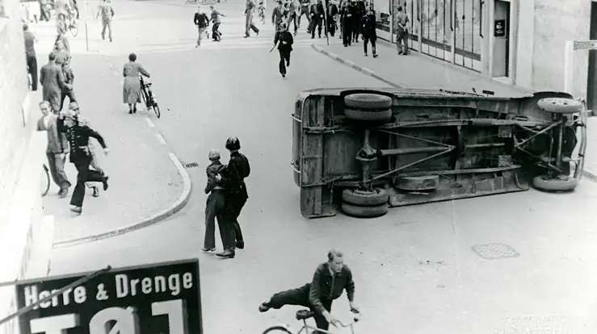
Uroligheder i Odense i august 1943. Foto: Nationalmuseet.
Den danske flåde sænkede selv hovedparten af sine skibe i 1943, for at de ikke skulle falde i tyske hænder. Derefter havde Danmark reelt ingen regering, selv om kongen havde nægtet at modtage regeringens afskedsbegæring. I praksis blev landet derefter styret af departementscheferne, det vil sige ministeriernes øverste administrative chefer. De videreførte i et vist omfang, og mere uformelt, koordinationen med den tyske besættelsesmagt for at beskytte befolkningen mest muligt på trods af den nye og mere alvorlige situation i landet.
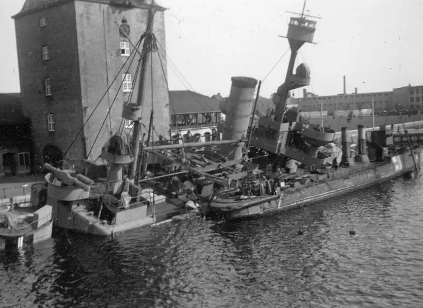
Sænkning af krigsskibet Peder Skram i 1943. Foto: Nationalmuseet.
1.10.2 REDNINGEN AF DE DANSKE JØDER
I 1940 levede der cirka 8.000 jøder i Danmark. Mere end 7.000 af dem nåede at flygte fra nazisternes forfølgelser under besættelsen. De fleste blev hjulpet til Sverige af danske medborgere, lige inden tyskerne i oktober 1943 forsøgte at anholde de danske jøder. Op mod 500 danske jøder blev dog sendt til koncen trationslejre i Tyskland, hvor mange omkom. I europæisk målestok overlevede en meget stor andel af de danske jøder dog dette folkemord, som også kendes under navnet Holocaust. I alt myrdede Nazi-Tyskland seks millioner af Europas cirka ni-ti millioner jøder under krigen – de fleste ved masseskydninger eller i gaskamre i udryddelseslejre.
1.10.3 ISLAND BLIVER SELVSTÆNDIGT
I 1944 løsrev Island sig endegyldigt efter 564 år under Danmark. I anden halvdel af 1800-tallet opstod der en stærk selvstændighedsbevægelse i Island, som i 1918 med den såkaldte Forbundslov havde fået udstrakt selvstyre i et forbund – en ”personalunion” – med Danmark. Det vil sige, at den danske konge også var konge i Island. Videre blev den islandske udenrigs- og forsvarspolitik varetaget af Danmark.
Under 2. Verdenskrig fik Islands geografiske placering midt i den nordlige del af Atlanterhavet stor betydning. Fly og skibe på vej fra USA til Europa kunne bruge øen som base. Storbritannien besatte derfor Island i maj 1940 for at forhindre en tysk invasion. Senere under krigen overtog USA forsvaret af det islandske område.
Forbundsloven i 1918 udløb i 1943, og Danmark, som var under tysk besættelse havde derfor ikke reel mulighed for at genforhandle den. Ved en folkeafstem ning besluttede en næsten enig islandsk befolkning sig for fuld selvstændighed. Republikken Island blev således udråbt den 17. juni 1944, som derfor blev Islands nationaldag.
1.10.4 MODSTAND OG BEFRIELSE
De sidste år af besættelsen var præget af flere og flere sabotageaktioner både mod det tyske militær i Danmark og mod de danskere, der samarbejdede med besættelsesmagten. Frihedsrådet blev oprettet i september 1943. Det var en illegal komité, hvor lederne fra de forskellige modstandsbevægelser koordine rede modstanden mod den tyske besættelsesmagt. En stor strejke i København i juli 1944 gav anledning til øget kontakt mellem modstandsbevægelse og poli tikere. Efter strejken samarbejdede Frihedsrådet og de danske politikere om at få Danmark anerkendt som allieret i kampen mod Tyskland. Det modsatte Sovjetunionen sig dog.
I foråret 1945 kollapsede det nazistiske Tyskland efter hårde kampe i Europa. Den 5. maj blev Danmark officielt befriet af britiske styrker efter, at de tyske tropper havde overgivet sig. På Bornholm nægtede tyskerne dog at overgive sig. I besættelsens sidste dage blev øen derfor angrebet af sovjetiske styrker, som blev på øen frem til foråret 1946. I alt blev cirka 7.000 danskere dræbt under 2. Verdenskrig, heraf var mange søfolk, der sejlede i allieret krigstjeneste.
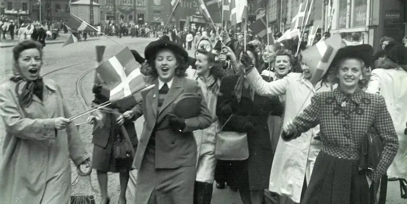
Fejring af befrielsen i København den 5. maj efter fem års tysk besættelse.
Danmark blev således ikke så hårdt ramt af 2. Verdenskrig som mange andre europæiske lande. 2. Verdenskrig er med cirka 60 millioner døde verden over den blodigste krig i verdenshistorien, og dødstallet var langt højere i næsten alle andre tysk besatte lande – for eksempel mistede Holland cirka 200.000 borgere, og i Østeuropa, hvor krigen var langt blodigere end i Vesteuropa, mistede Polen alene fem-seks millioner borgere.
De relativt lave dødstal og begrænsede ødelæggelser skyldes for det første den hurtige danske overgivelse i april 1940 og den efterfølgende samarbejdspolitik med tyskerne. For det andet skyldes det, at de tyske tropper i Danmark – bortset fra dem på Bornholm – overgav sig uden kamp ved krigens afslutning i 1945, allerede før de allierede styrker ankom til landet. Krigens væsentlige kamp handlinger mellem stormagterne nåede således aldrig til Danmark.
Der var dog knaphed på mange varer i Danmark. For at styre forbruget og for at kunne fordele de knappe forsyninger ud til alle indførtes såkaldt rationering på for eksempel benzin, gas, el, sukker, kaffe, te, mel, brød, sæbe, kød og smør. Det betød, at hver borger kun kunne købe en begrænset mængde af disse varer. Flere af vintrene under besættelsen var usædvanligt kolde med temperaturer ned til minus 30 grader, og manglen på brændsel (for eksempel olie og kul) gjorde det svært at opvarme boliger, skoler og arbejdspladser. Men i modsætning til mange andre lande var der dog aldrig sult i Danmark. Det politiske system overlevede også krigen. Modstandsbevægelsen fik en vis politisk indflydelse i tiden lige efter befrielsen, men de gamle politikere og partier vendte hurtigt tilbage til magten.
1.11 KOLD KRIG, VELFÆRD OG UNGDOMSOPRØR (1945-72)
Danmark ændrede sig meget i tiden efter 2. Verdenskrig. Danmark opgav sin traditionelle neutralitetspolitik og blev medlem af NATO i 1949. Også indenrigspolitisk bød efterkrigstiden på store forandringer, ikke mindst på grund af den hastigt voksende økonomiske velstand. Danskerne fik flere penge mellem hænderne end nogensinde før. Mod slutningen af 1960’erne voksede uenighederne mellem yngre og ældre generationer, fordi flere unge satte spørgsmålstegn ved mange af samfundets traditionelle normer.
1.11.1 DANSK POLITIK OG DEN KOLDE KRIG
Verden var blevet en anden efter 2. Verdenskrig. Millioner af mennesker var blevet dræbt under krigen, og mange byer i Europa lå i ruiner. Krigen havde skabt et stærkt ønske om at sikre international fred og sikkerhed. I 1945 stiftede en række lande derfor De Forenede Nationer (FN). Danmark var fra begyndelsen med i FN, der blandt andet skulle være med til at forhindre en ny verdenskrig.
Efter 2. Verdenskrig opstod Den Kolde Krig mellem de to nye supermagter, USA og Sovjetunionen. Den var en ideologisk kamp og et våbenkapløb om blandt andet atomvåben mellem de vestlige demokratier baseret på liberal markedsøkonomi på den ene side – og de kommunistiske lande baseret på planøkonomi på den anden side. Europa blev delt i et vest og et øst langs en linje, som især afspej lede, hvilke områder der i 2. Verdenskrig var blevet befriet fra Nazi-Tyskland af henholdsvis USA og Storbritannien i vest og af Sovjetunionen i øst.
Opdelingen mellem øst og vest blev kendt som Jerntæppet. Den Kolde Krig kom til at præge verden frem til, at de kommunistiske diktaturer i Østeuropa faldt omkring 1990.
Danmark havde søgt at holde sig neutral i internationale konflikter siden Englandskri gene i begyndelsen af 1800-tallet. Men da neutralitetspolitikken ikke kunne forhindre den tyske besættelse under 2. Verdenskrig, valgte Danmark side i Den Kolde Krig. Man følte sig bedre beskyttet som medlem af forsvarsalliancen NATO (Den Nordatlantiske Traktat- organisation). I 1949 blev Danmark derfor medlem af NATO. Alliancen bestod af USA, Canada, Tyrkiet og en række vesteuropæiske lande. Centralt i NATO-traktaten er artikel 5 – den såkaldte ”musketer-ed”. Den siger, at et væbnet angreb mod et medlemsland skal betragtes som et angreb på alle medlemslandene. Dette forpligter de andre NATO-lande til – om nødvendigt også med militær magt – at hjælpe det land, som er blevet angrebet.
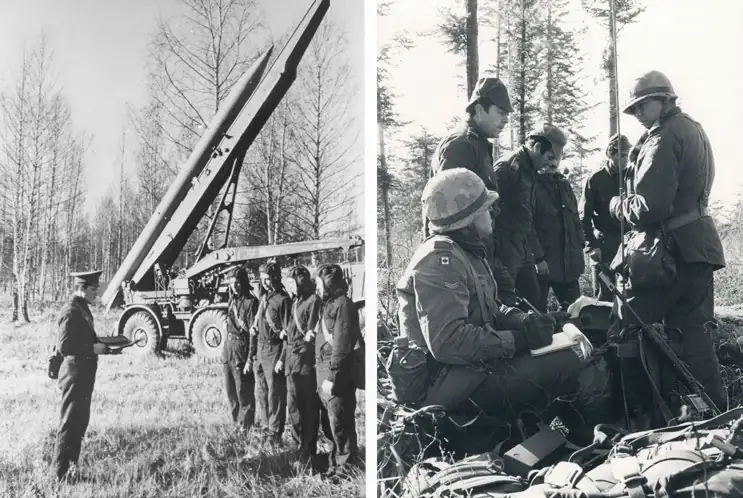
Sovjetiske tropper på øvelse i Polen og canadiske tropper i Vest-Tyskland under Den Kolde Krig.
Over for NATO stod Warszawa-pagten, der blev stiftet i 1955. Denne forsvars alliance var ledet af det kommunistiske Sovjetunionen, som fik stor indfly delse på landene i Østeuropa efter 2. Verdenskrig. Efter næsten 100 år under Tysklands indflydelse orienterede Danmarks udenrigs- og sikkerhedspolitik efter 2. Verdenskrig sig særligt mod USA.
USA spillede en vigtig rolle i genopbygningen af Vesteuropa efter 2. Verdens krig. I årene 1948-51 gav USA meget store pengebeløb til flere vesteuropæiske lande, blandt andet Danmark. Pengene blev givet som en del af Marshall-planen, opkaldt efter den amerikanske udenrigsminister George Marshall. Formålet med Marshall-hjælpen var at få sat gang i den internationale samhandel, som var gået i stå under 2. Verdenskrig. Dermed håbede man også at kunne hindre kommunismens videre udbredelse i Vesteuropa.
Den økonomiske hjælp fra USA var med til at modernisere det danske landbrug i de første årtier efter 2. Verdenskrig. Hundred-tusinder af heste blev afløst af traktorer, meje tærskere og andre maskiner. En stor del af arbejdskraften på landet blev derfor overflødig, og mange folk flyttede fra landområderne ind til byerne i 1950’erne.
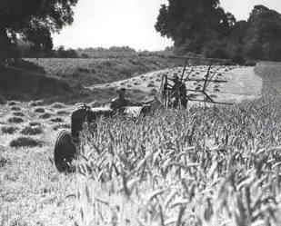
Traktor på dansk landbrug i 1950'erne.
Det første valg efter krigen i 1945 resulterede i en borgerlig regering under Venstres ledelse, men i 1947 genvandt Socialdemokratiet regeringsmagten. Danmarks Kommunistiske Parti (DKP) fik med 12,5 procent af stemmerne forholdsvis stor tilslutning ved valget i 1945, fordi der i store dele af befolkningen var sympati for, at mange danske kommunister havde deltaget i modstands kampen under besættelsen og for Sovjetunionens betydelige indsats i nedkæm pelsen af Nazi-Tyskland. De fleste af partiets nye vælgere forlod dem dog hurtigt igen. Langt de fleste vælgere stemte fortsat på de fire gamle partier Social demokratiet, Det Radikale Venstre, Det Konservative Folkeparti og Venstre. Den danske tradition for politisk stabilitet og enighed om de grundlæggende demokratiske spilleregler fortsatte under Den Kolde Krig. De sovjetisk støttede kommunister fik aldrig del i regeringsmagten i Danmark.
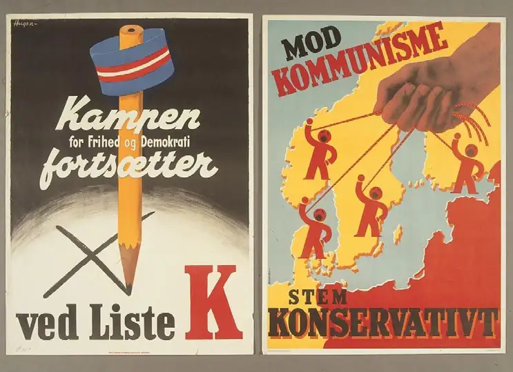
Valgplakater i 1945 fra Danmarks Kommunistiske Parti (med henvisning til kommunisternes indsats i modstandskampen under besættelsen) og Det Konservative Folkeparti (med advarsel om et sovjetisk angreb).
I efterkrigstiden begyndte man igen at diskutere, om der var behov for at ændre grundloven. Ved en folkeafstemning i 1953 stemte et flertal for at ændre grund loven. Ændringen betød blandt andet, at Landstinget blev afskaffet. Der blev i stedet indført et såkaldt etkammersystem med Folketinget som eneste lovgi vende forsamling. Desuden kom grundloven nu også til at gælde for Grønland og ikke kun for Danmark og Færøerne. Tronfølgen blev også ændret, sådan at den danske trone kunne gå i arv til en kvinde. Sønner gik dog stadig forud for døtre, hvilket vil sige, at en yngre søn stadigvæk ville arve tronen, hvis han havde en ældre søster. Spørgsmålet om kvindelig tronfølge pressede sig særligt på, fordi den daværende konge Frederik 9. (1947-72) havde tre døtre og ingen sønner. Grundlovsændringen i 1953 muliggjorde dermed, at hans ældste datter, den senere dronning Margrethe 2. (1972-2024), kunne arve tronen. Med en ændring af tronfølgeloven i 2009 fik mænd og kvinder helt lige arveret til tronen, så det altid er den ældste – søn eller datter – der arver tronen.
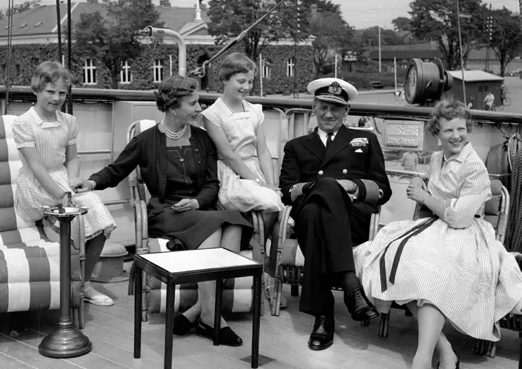
Kong Frederik 9. (født 1899, reg. 1947-72), dronning Ingrid (1910-2000) med deres tre døtre Anne-Marie (født 1946), Benedikte (født 1944) og Margrethe (født 1940). Foto: Allan Moe/Ritzau Scanpix.
Det var Socialdemokratiet, der havde størst politisk indflydelse i de første årtier efter 2. Verdenskrig. Fra 1953 til 1968 blev alle regeringer i Danmark ledet af Socialdemokratiet. Det eneste parti, der opstod i denne periode, og som stadig er i Folketinget, er SF (Socialistisk Folkeparti). SF blev dannet i 1959 af en gruppe personer, der forlod DKP i protest mod de kommunistiske landes undertrykkelse af deres befolkninger, som udbryderne ikke mente, at DKP tog nok afstand fra. Nedkæmpelsen af den folkelige opstand mod det kommunistiske styre i Ungarn i 1956 havde afgørende betydning for splittelsen af DKP.
1.11.2 STØRRE VELFÆRD
Fra slutningen af 1950’erne var der høj økonomisk vækst i Europa, herunder også i Danmark, som i perioden 1957-73 havde en økonomisk højkonjunktur nærmest uden sidestykke i landets historie. Der var fuld beskæftigelse og stor stigning i produktionen, ligesom de fleste indkomster voksede støt i denne periode. Perioden er derfor ofte blevet omtalt som ’De glade 60’ere’. Fra begyn delsen af 1960’erne eksporterede Danmark flere varer fra industrien end fra landbruget.
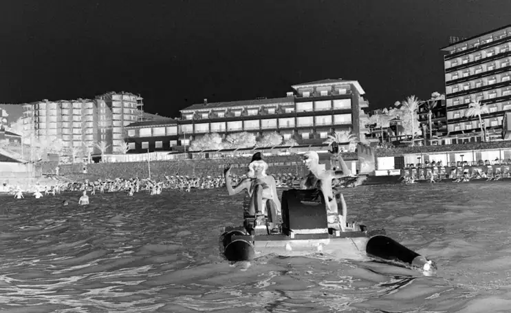
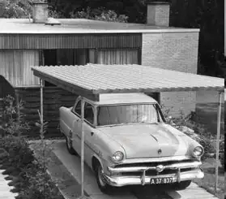
Højkonjunkturen (cirka 1957-73) gav mange råd til nye forbrugsgoder.
Det var også i denne periode, at opbygningen af det danske velfærdssamfund for alvor begyndte, og et stadig større socialt sikkerhedsnet blev spændt ud under befolkningen. Flere af de ordninger, som ligger til grund for nutidens danske velfærdssamfund, blev etableret i de år, ligesom mange af de eksisterende ordninger blev udbygget betydeligt.
Folkepensionen, der giver enhver borger ret til pension uanset indkomst, blev for eksempel indført i 1956. Og i 1964 vedtog Folketinget, at kommunerne skulle oprette det nødvendige antal daginstitutionspladser, således at alle familier kunne få mulighed for at få deres børn i vuggestue og børnehave. Udbygningen af velfærdsstaten medførte også, at skatter og afgifter steg meget i denne periode.
Væksten indebar også, at der var behov for mere arbejdskraft. Mange danske kvinder kom ud på arbejdsmarkedet. I midten af 1900-tallet havde langt de fleste gifte kvinder passet hus og børn, mens mændene gik på arbejde uden for hjemmet. Fra 1960’erne fik kvinderne i stigende grad uddannelse og arbejde. Og mange flere børn tilbragte en del af dagen i en af de mange nye vuggestuer, børnehaver og fritidshjem, der blev oprettet. Kvinderne fik dog ofte en lavere løn end mændene for det samme arbejde, og kampen for at sikre ligestilling mellem mænd og kvinder blev stærkere.
Den økonomiske vækst betød, at mange flere mennesker pludselig fik adgang til forbrugsgoder ud over de mest basale fornødenheder som mad, tøj og bolig.
Tv-apparater, pladespillere, køleskabe, frysere, vaskemaskiner, parcelhuse, biler med mere havde hidtil været anset som luksusvarer, som kun de rigeste havde haft råd til. Nu blev de i langt højere grad en del af de fleste menneskers liv. Oven i den øgede velstand blev arbejdsugen løbende også kortere (fra 48 til 40 timer mellem 1958 og 1974), og folk fik mere ferie (fra to til fire uger mellem 1953 og 1972). Derfor var der nu også langt flere, der havde tid og råd til at rejse til udlandet på ferie eller købe et sommerhus.
1.11.3 UNGDOMSOPRØR OG NYE KULTURELLE STRØMNINGER
I slutningen af 1960’erne var der i Danmark som i mange andre vestlige lande tyde lige spændinger mellem generationerne. Ungdommens modstand mod samfundets normer og autoriteter voksede, og derfor gjorde de oprør. Mange unge, især i de større byer, brød med samfundets traditionelle normer og værdier. De satte blandt andet spørgsmålstegn ved USA’s deltagelse i krigen i Vietnam og ”kerne familien” med far, mor og børn som samfundets bærende enhed. I stedet kom der en friere holdning til seksuelle relationer – også før ægteskabet.
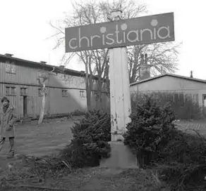
Fra 1966 kunne p-piller sælges lovligt i Danmark. Kvinder fik dermed adgang til et nemt præventionsmiddel, så de selv kunne styre, om de ønskede at blive gravide og få børn. P-pillen fik derfor afgørende betydning for kvin ders seksuelle frigørelse.
Den nyanlagte fristad Christiania, 1971.
Nye måder at leve sammen på blev også mere accepteret. Eksempelvis kunne et par godt bo og få børn sammen uden at være gift.
Nogle unge søgte nye måder at bo sammen på, blandt andet i kollektiver. Andre eksperimenterede med narkotiske stoffer. Fristaden Christiania i København blev oprettet i 1971, da unge besatte en forladt militærkaserne, Bådsmands strædes Kaserne. Herefter bosatte op mod 1.000 personer sig på Christiania og forsøgte at udleve mange af tidens nye ideer. Fristaden Christiania eksi sterer stadig.
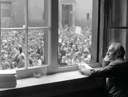
Ungdomsoprøret førte også til et studenteroprør. I 1968 og årene efter gjorde mange studerende og yngre undervisere oprør mod det såkaldte professorvælde på universiteterne. De krævede mere indflydelse, nye ledelses- og undervisningsformer og et andet indhold i studierne, og det lykkedes dem at få mange af deres krav igennem.
Rektor for Københavns Universitet, professor Mogens Fog, overværer en studenterdemonstration på Vor Frue Plads med 5.000 deltagere.
Også den mere strenge og autoritære opdragelse af børn i familien og i skolerne blev erstattet af en pædagogik baseret på øget dialog og samarbejde mellem børn og voksne. Blandt andet blev det i 1967 helt forbudt for lærerne at slå eleverne i den danske folkeskole. Det var dog først 30 år senere i 1997, at det også blev helt forbudt for forældre at slå deres egne børn.
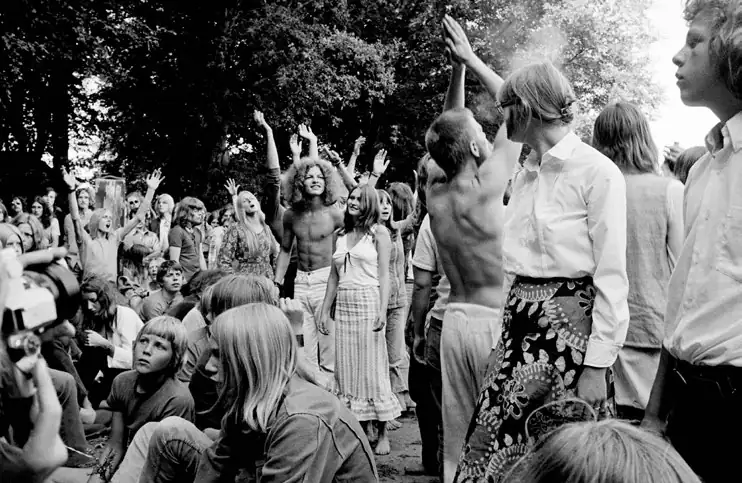
Unge mennesker til festival i København 1971. Foto: Jørgen Andel/Ritzau Scanpix.
1.12 DANMARK I EUROPA OG OLIEKRISE (1972-90)
Danmark blev i 1973 medlem af Det Europæiske Fællesskab, EF, der var forløberen for det nuværende EU. I begyndelsen af 1970’erne blev Danmark efter mange år med god økonomi og vækst ligesom mange andre lande ramt af økonomisk krise. 1970’erne og 1980’erne blev en periode for Danmark med lav økonomisk vækst samt nye politiske partier og bevægelser.
1.12.1 DANMARKS MEDLEMSKAB AF EF
I 1958 indledte Frankrig, Italien, Tyskland og Benelux-landene (Belgien, Nederlandene og Luxembourg) et økonomisk samarbejde, som udviklede sig til Det Europæiske Fællesskab (EF) og siden hen til Den Europæiske Union (EU). Formålet med EF var at styrke handlen mellem medlemslandene og at sikre freden via et stærkt samarbejde. Derfor skulle der mellem EF-landene oprettes et fælles marked uden toldgrænser eller andre hindringer for den indbyrdes handel. Målet var også, at alle indbyggere frit skulle kunne søge og tage arbejde i andre EF-lande.
Den 1. januar 1973 trådte Danmark ind i EF. Et flertal på 63,3 procent af vælgerne havde sagt ja til medlemskab ved en folkeafstemning i oktober 1972. Op til afstem ningen var der megen debat om EF-spørgsmålet. Tilhængerne mente, at Danmark ville blive rigere ved at deltage i det økonomiske europæiske samarbejde. Man forven tede for det første, at Danmarks dengang vigtigste handelspartner, Storbritannien, også kom med i EF sammen med Danmark. Videre ønskede man at sikre de bedste muligheder for at handle på det europæiske marked og ikke mindst det tyske, hvis betydning for dansk økonomi var vokset kraftigt de forudgående år. Derudover var det en fordel at sikre dansk landbrug adgang til EF’s landbrugsstøtte. Modstanderne var imod, at Danmark opgav noget af sin ret til at bestemme selv, og var bange for, at de store lande ville komme til at bestemme for meget, samt at medlemskabet ville gå ud over den offentlige velfærd og den danske nationale identitet.
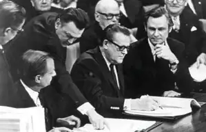
Danmark bliver medlem af Det Europæiske Fællesskab (EF) i 1972. Statsminister Jens Otto Krag underskriver Romtraktaten i Bruxelles 22. januar 1972.
Hensynet til eksport og økonomi blev afgørende for det danske ja. Storbritannien og Irland blev medlemmer af EF samtidig med Danmark. I 1986 var der en ny folkeafstemning om en styrkelse af samarbejdet i EF. Afstemningen handlede om Den Europæiske Fællesakt eller EF-pakken, som den kom til at hedde i Danmark. Den havde til formål at gennemføre et indre marked, hvor varer, personer, tjenesteydelser og kapital kunne bevæge sig frit over grænserne mellem medlemslandene. Et flertal af danskerne (56,2 procent) stemte ja.
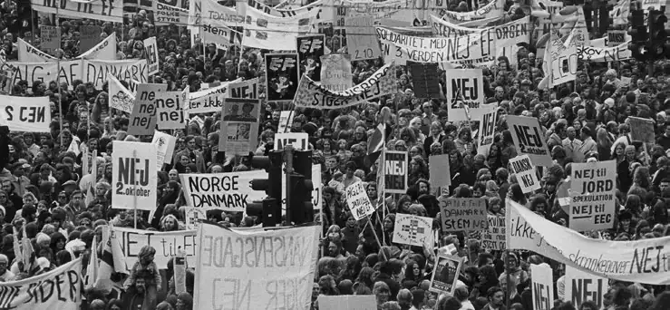
Demonstration på Rådhuspladsen mod Danmarks medlemskab af EF.
1.12.2 OLIEKRISE
I 1974 blev Danmark ligesom mange andre vestlige lande ramt af en økonomisk krise. Den blev udløst af, at priserne på olie steg voldsomt i 1973. Baggrunden var, at de arabiske lande øgede prisen markant på olie for at lægge pres på de vestlige lande, som støttede Israel i en krig mod Ægypten og Syrien (Yom Kippur-krigen).
Olie var helt afgørende for økonomien, da den skulle bruges i det meste af industrien, til biler og opvarmning af boliger. Danmark producerede dengang selv kun meget lidt olie, som derfor skulle købes i udlandet. Derfor gav prisstigningen alvorlige problemer i Danmark, som i forvejen havde underskud på samhandlen med udlandet. De forud gående års høje økonomiske vækst faldt betydeligt, priserne i butikkerne steg meget hurtigt, mange blev arbejdsløse, og overskuddet på statens budget blev vendt til et underskud.
Problemerne blev forværret og forlænget, da endnu en voldsom prisstigning på olie indtraf i 1979-80 på grund af uroligheder i Iran i forbindelse med den islamiske revolution og den efterfølgende krig mellem Iran og Irak. I løbet af 1980’erne faldt prisen på olie igen, fordi der blev udvundet mere olie uden for Mellemøsten, for eksempel i Nordsøen. Og fordi en del af verdens forbrug af olie blev udskiftet med andre former for energi, for eksempel naturgas, kul, atomkraft og i meget mindre omfang også vedvarende energikilder som vindkraft eller solenergi. Videre bidrog oliekriserne til at skabe en interesse for energi- besparende tiltag som bedre isolering af boliger og udvikling af biler og elektronik (blandt andet tv-apparater, køleskabe og frysere), der bruger energien mere effektivt.
1.12.3 POLITISK OPBRUD
1970’erne var også en periode med store politiske forandringer i Danmark. Mange vælgere protesterede mod høje skatter og mod det bureaukrati, der var fulgt med den store offentlige sektor i velfærdssamfundet, og vælgerne fik større mistillid til politikerne.
Ved folketingsvalget i 1973 stemte vælgerne pludseligt markant anderledes end tidligere. Der var tale om et stort vælgerskred, og dette valg kaldes derfor Jord skredsvalget.
Socialdemokratiet, Det Radikale Venstre, Venstre, Det Konservative Folkeparti og SF – de fem daværende partier i Folketinget – fik alle meget færre stemmer. Før Jordskredsvalget havde 93 procent af vælgerne stemt på et af de fem partier. Efter valget var det kun 64 procent.
Vælgerne stemte til gengæld fem partier mere ind i Folketinget, hvoraf det største blev protestpartiet Fremskridtspartiet, som fik 16 procent af stemmerne med advokaten Mogens Glistrup i spidsen. Partiets mærkesager var at afskaffe indkomstskat og offentligt bureaukrati. Mange af de gamle partiers vælgere vendte gradvis tilbage over de næste år, og ingen af de nye partier, som blev valgt i 1973, er længere i Folketinget.
Men Jordskredsvalget er en milepæl i dansk politisk historie, blandt andet fordi der i eftertiden har været valgt mellem 7 og 12 partier ind i Folketinget ved hvert valg (frem for typisk 5-6 før 1973). Selv om der løbende er opstået nye partier, har det dog altid været politikere fra enten Socialdemokratiet, Radikale Venstre, Det Konservative Folkeparti eller Venstre, som har været statsministre i Danmark siden Systemskiftet i 1901.
I 1970’erne forsøgte skiftende danske regeringer at vende den økonomiske nedtur, men uden meget held. I begyndelsen af 1980’erne havde Danmark et stort underskud på handelsbalancen, det vil sige forholdet mellem værdien af det Danmark køber og sælger i udlandet. Samtidig var omkring 10 procent af arbejdsstyrken uden arbejde. En vigtig årsag til den økonomiske krise var en stor gæld til udlandet.
Socialdemokratiet havde – kun med kortere afbrydelser – siddet i regering og haft statsministerposten det meste af tiden siden 1929. Men i 1982 overlod de – på grund af vanskeligheder med at løse de økonomiske problemer – regerings magten til den borgerlige fløj, uden at der havde været folketingsvalg. Stats ministeren blev den konservative Poul Schlüter, som var statsminister i over ti år frem til 1993.
Poul Schlüter er den første og hidtil eneste statsminister fra Det Konserva tive Folkeparti. Det skyldes, at Venstre det meste af tiden har været det største borgerlige parti siden Systemskiftet i 1901 og derfor normalt har haft statsmini sterposten, når der efter 1901 har været borgerlige regeringer. Regeringsskiftet i 1982 er endvidere en historisk milepæl, fordi de borgerlige partier siden oftest har været ved magten. I perioden 1982-2022 sad de borgerlige partier Venstre og Det Konservative Folkeparti således tilsammen i regering og havde statsminister posten i sammenlagt 24 år og Socialdemokratiet i sammenlagt 16 år.
Det lykkedes efterhånden Schlüter-regeringen at forbedre den danske økonomi, navnlig i sidste halvdel af 1980’erne. Prisen var en rekordhøj ledighed i starten af 1990’erne. Men inflationen (prisstigningerne), som havde været et stort problem i 1970’erne, faldt, og fra 1990 var der overskud på handelsbalancen over for udlandet. Dermed kunne der komme gang i en sund økonomisk vækst. I den forbindelse hjalp det også, at Danmark blev mere selvforsynende med olie fra Nordsøen.
Schlüter-regeringen ophævede også DR’s monopol – det vil sige eneret – på at sende dansk tv, som DR havde haft siden den første danske tv-udsendelse i 1948. I 1986 blev det således tilladt for private at eje tv-kanaler, og samme år vedtog Folketinget at etablere TV2, som sendte første gang i 1988. I de følgende år voksede antallet af radio- og tv-kanaler i Danmark betyde ligt, og kabel- og satellit-tv med mange udenlandske kanaler blev en betydelig del af det danske mediebillede.
Poul Schlüter var statsminister 1982-93.
1.12.4 SOCIALE BEVÆGELSER
Efter at kvinderne var begyndt at komme ud på arbejdsmarkedet fra midten af 1960’erne, krævede mange kvinder i 1970’erne i forlængelse heraf mere lige stilling. For eksempel kæmpede kvinderne i rød-strømpebevægelsen gennem politiske aktioner for bedre vilkår for kvinder. Op gennem 1970’erne var ligestil ling et meget varmt politisk emne. I 1976 vedtog Folketinget på baggrund af et EF-direktiv en lov om lige løn for samme arbejde.
Fri adgang til abort var et andet af kvindebevægelsens politiske mål. Tidligere havde det kun været muligt at få abort, hvis der var en særlig grund til det, for eksempel hensynet til kvindens helbred. Men i 1973 vedtog Folketinget, at danske kvinder selv skulle kunne vælge, om de ville afbryde en graviditet. Indtil 12. graviditetsuge kunne kvinder frit vælge at få foretaget en abort. Modstanden mod den fri abort var en væsentlig grund til, at Kristeligt Folkeparti (som nu hedder Kristendemokraterne) blev dannet og valgt ind i Folketinget i 1973. Men den fri abort gælder stadigvæk, og i 2025 blev grænsen for fri abort hævet fra den 12. til den 18. graviditetsuge.
Flere græsrodsbevægelser var meget aktive i 1970’erne. Græsrodsbevægel serne var som regel grupper, der arbejdede for at opnå ét bestemt politisk mål. Fredsbevægelsen var aktiv i denne periode og arbejdede blandt andet mod militær oprustning og våbenkapløbet mellem stormagterne.
Tusindvis af danskere demonstrerede også mod atomkraft. Den folkelige modstand var en vigtig grund til, at Folketinget i 1985 besluttede at planlægge fremtidig energiforsyning i Danmark uden atomkraft. Ikke mindst en alvorlig ulykke på atomkraftværket Tjernobyl i Sovjetunionen (i det nuværende Ukraine) året efter i 1986 har haft stor betydning for eftertidens modvilje mod atomkraft.
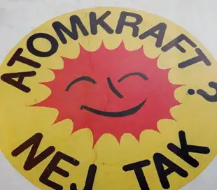
De seneste års klimakrise og høje energipriser har dog skabt en fornyet poli tisk diskussion om, hvor vidt Danmark alligevel bør indføre atomkraft i en eller anden form, ligesom en større del af befolkningen er blevet mere positivt stemt over for atomkraft.
Anti-atomkraftbevægelsen internationale kendetegn, som stammer fra den danske gren af bevægelsen.
1.13 DANMARK I DET GLOBALE SAMFUND (1990-)
Danmarkshistorien har siden 1990 stået i globaliseringens tegn. Berlinmuren og Jerntæppet faldt, og nye konflikter brød ud. Kampen mod terrorisme har også præget verden og Danmark, og har spillet en ny og mere aktiv rolle i internationale forhold. EF udvidede det politiske samarbejde og blev omdøbt til Den Europæiske Union (EU), men danskerne tog kun tøvende det nye EU til sig. Landets økonomiske situation – dog afbrudt af en finanskrise i 2008 – forbedrede sig igen, og problemer med at integrere flygtninge og indvandrere i samfundet optog stadig flere. I 2020 ramte en global sundhedskrise med Covid-19.
1.13.1 DANMARK I DET NYE EUROPA
Omkring 1990 brød det kommunistiske system i Østeuropa sammen. Berlinmurens fald i 1989 og Sovjetunionens opløsning i 1991 betød enden på Den Kolde Krig. Det medførte store forandringer i Europa. Central- og østeuropæiske lande, som tidligere havde ligget bag Jerntæppet, rykkede nu politisk tættere på Vesteuropa. Danmark fik tætte forbindelser med især de tre baltiske lande, Estland, Letland og Litauen.
Berlinmuren faldt i november 1989.
Efter Den Kolde Krig brød nye konflikter ud, blandt andet i Irak og det tidligere Jugoslavien. Danmark deltog fra nu af i øget grad aktivt i internationale konflikter og blev involveret i flere af disse krige. Efter at Irak havde besat Kuwait i 1990, sendte Danmark således et krigsskib af sted, der skulle hjælpe med at hånd hæve det internationale samfunds handelsblokade over for Irak.
Jugoslavien blev opløst i 1991-92. I stedet opstod en række selvstændige stater, som hurtigt kom i konflikt med hinanden. Danske soldater var udstationeret som FN-styrker (i Bosnien og Kroatien) i midten af 1990’erne. De skulle være med til at skabe fred mellem stridens parter. Også Kosovo, som dengang var en provins i Jugoslavien, blev ramt af konflikt i 1999. Her deltog danske jagerfly i NATO’s aktioner.
Danmarks forhold til det europæiske samarbejde var præget af politisk uenighed i 1990’erne. I 1992 blev de 12 medlemslande enige om at udvide samarbejdet, og EF skiftede navn til EU – Den Europæiske Union. Navneforandringen afspejlede, at samarbejdet, som hidtil havde været et samarbejde om økonomiske spørgsmål som handel, landbrug og fiskeri, blev udvidet med en bredere vifte af politiske samarbejdsområder.
Et flertal i Folketinget gik ind for, at Danmark skulle deltage i det udvidede samar bejde. Men ifølge grundloven var det nødvendigt at afholde en folkeafstemning. I juni 1992 stemte et lille flertal af befolkningen (50,7 procent) nej til Maastricht-traktaten, som unionsaftalen kom til at hedde, fordi den var indgået i byen Maastricht i Holland.
I 1993 stemte et flertal af befolkningen (56,7 procent) ja til den såkaldte Edinburgh-aftale, som betød, at Danmark fik fire såkaldte forbehold over for EU. Det vil sige, at Danmark ikke deltog i EU’s samarbejde på følgende fire områder: unionsborgerskabet, den fælles valuta (euroen), forsvarsområdet og samarbejdet om en fælles rets- og udlændingepolitik.
To af forbeholdene gælder stadig i dag. Derfor har Danmark har således for eksempel fortsat sin egen nationale valuta, kronen, hvorimod de fleste EU-lande har den fælles valuta, euroen. Og Danmark deltager heller ikke i EU’s fælles rets- og udlændingepolitik. Modstanden mod EU i dele af befolkningen blev også en af årsa gerne til, at Enhedslisten, der i 1989 var blevet dannet som en samling af en række mindre venstrefløjspartier, blev valgt ind i Folketinget for første gang i 1994. Trods EU-forbeholdene er et klart flertal af den danske befolkning positivt indstillet over for det danske medlemskab af EU.
1.13.2 ØKONOMISK OPSVING OG DISKUSSIONER OM INDVANDRING
I 1993 kom Socialdemokratiet igen til magten med Poul Nyrup Rasmussen som ny statsminister. De økonomiske problemer, som Danmark oplevede i 1970’erne og i 1980’erne, vendte til en økonomisk opgang. Midt i 1990’erne steg den økonomiske vækst igen, og flere kom i arbejde. Desuden betød produktionen af olie og gas fra de danske felter i Nordsøen, at Danmark efterhånden fik en nettoeksport af olie.
Det var medvirkende til, at overskuddet på handelsbalancen blev større, og gælden til udlandet efterhånden blev afviklet. Debatten om indvandring til Danmark fyldte stadig mere i løbet af 1990’erne. Antallet af personer med indvandrerbaggrund var steget meget i de foregåede årtier, og i de større danske byer var der opstået bydele, hvor mange beboere havde en anden etnisk baggrund end dansk.
Boligområdet Gellerupparken i Aarhus. Foto: Tue Schou Pedersen.
Samtidig havde mange flygtninge og indvandrere vanskeligt ved at få uddannelse og arbejde. Spørgsmålet om integration fik i denne periode stor politisk opmærk somhed – blandt andet fordi forholdsvis mange med udenlandsk baggrund i Danmark klarede sig dårligt i uddannelsessystemet, og fordi en forholdsvis stor andel var uden arbejde og modtog sociale ydelser som kontanthjælp og førtidspension. Mange danskere mente også, at nogle indvandrere havde en kultur, som var meget anderledes end danskernes, og at de ikke altid var gode nok til at lære det danske sprog. Ønsket om stramninger af udlændinge- og integrationspolitikken blandt mange danskere havde stor betydning for, at Dansk Folkeparti med partistifter og partiformand Pia Kjærsgaard (f. 1947) i spidsen blev valgt ind i Folketinget første gang i 1998. Dansk Folkeparti var medvirkende til, at udlændingepo litikken blev et vigtigt tema ved folke tingsvalgene i de efterfølgende årtier. Andre politiske partier tog dog også efterhånden emnet op.
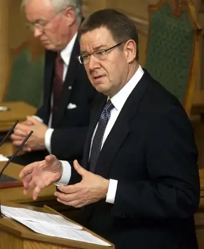
Poul Nyrup Rasmussen statsminister 1993-2001. Foto: Jens Dresling/ Ritzau Scanpix.
I 2001 genvandt de borgerlige partier regeringsmagten. Stats ministeren blev Anders Fogh Rasmussen fra Venstre. Diskussi onerne om udlændinge og integra tion fortsatte, og den nye regering gennemførte flere stramninger af udlændingepolitikken. Formålet var at begrænse dele af indvan dringen, få flere i arbejde og forbedre integrationen. Nogle af de efterfølgende regeringer har gennemført yderligere stram ninger af udlændingepolitikken.
Anders Fogh Rasmussen, statsminister 2001-09.
For eksempel er der indført et krav om, at man skal have opholdt sig i en længere periode i Danmark og have arbejdet, før man kan modtage fuld kontanthjælp. Derudover skal udlændinge have boet længere tid i Danmark for at få dansk indfødsret, ligesom man skal opfylde krav til arbejde og selvforsørgelse. Endvidere må man ikke begå alvorlig krimina litet, og man skal bestå en række prøver i det danske sprog samt i dansk historie, samfund, kultur og værdier.
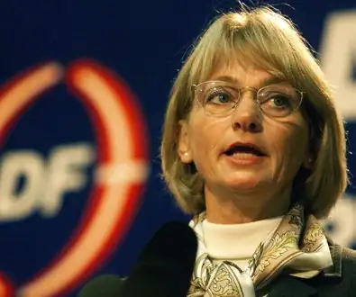
Pia Kjærsgaard tidligere formand for Dansk Folkeparti (1995-2012) og Folketingets første kvindelige formand (2015-19). Foto: Ritzau Scanpix.
Det er også blevet sværere at få en ægtefælle fra udlandet til Danmark. Blandt andet skal begge personer være fyldt 24 år (den såkaldte 24-års-regel) og opfylde en række krav om blandt andet arbejde, selvforsørgelse, uddannelse, bolig og danskkundskaber. Formålet er at sikre det bedst mulige udgangspunkt for vellykket integration af den ægtefælle, som kommer til Danmark.
Det er dog ikke alle, der har været enige om den strammere udlændingepo litik. Modstanderne har blandt andet kritiseret, at de lavere økonomiske ydelser skaber øget fattigdom og at de strammere krav til familiesammenføring splitter familier, og har gjort det for svært (også for danske statsborgere) at få en ægte fælle til landet.
1.13.3 DANMARK I INTERNATIONALE KONFLIKTER
Det internationale samfund forandrede sig hastigt i begyndelsen af det nye årtu sinde. Den globale økonomi og international terrorisme stillede Danmark over for nye udfordringer.
Efter terrorangrebet på USA den 11. september 2001 blev bekæmpelse af terrorisme en vigtig opgave i de fleste lande. Det har især ført til øget samarbejde mellem efterretningstjenester, men også til militære interven tioner, som Danmark har deltaget aktivt i. Bag angrebet på USA i 2001 stod terrorister, der opere rede fra Afghanistan i forståelse med det daværende afghanske styre. I 2002 besluttede Folke tinget at sende danske soldater til Afghanistan for at deltage i en amerikansk ledet indsats. I 2003 angreb USA Irak for at fjerne den irakiske diktator Saddam Hussein og Iraks angivelige masseødelæggelsesvåben. Igen bakkede Danmarks regering op og sendte danske soldater afsted.
Danske soldater i Irak i 2003.
En af Danmarks største udenrigspolitiske kriser i nyere tid udviklede sig, efter at avisen Jyllands-Posten i 2005 trykte 12 karikaturtegninger af den muslimske profet Muhammed. Avisen trykte tegningerne, fordi den havde hørt, at nogle tegnere ikke turde tegne Muhammed af frygt for at blive overfaldet eller dræbt. Karikaturtegningerne førte til store protester både i Danmark og i udlandet. I mange muslimske lande var der store demonstrationer, hvor der blandt andet blev sat ild til Dannebrog – og enkelte steder, i Syrien og Libanon, også til danske ambassader og konsulater. En række lande boykottede også danske produkter på grund af tegningerne. Jyllands-Posten blev i 2008 frifundet i en injuriesag anlagt af en række muslimske organisationer. Debatten om ytringsfriheden slut tede dog ikke der. I 2010 blev en af tegnerne forsøgt myrdet i sit hjem.
I 2015 blev Danmark ramt af et terrorangreb i København, hvor en mand, som sympatiserede med terrororganisationen Islamisk Stat, skød og dræbte en film skaber, mens han deltog i et debatmøde om ”Kunst, blasfemi og ytringsfrihed” på Østerbro. Senere samme dag forsøgte terroristen at trænge ind i den jødiske synagoge i det indre København. Ved angrebet blev en jødisk vagt skudt og dræbt uden for synagogen. Terroristen blev efterfølgende selv dræbt i en skudveksling med politiet.
1.13.4 FRA FINANSKRISE TIL NYT ØKONOMISK OPSVING
Efter cirka 15 år med økonomisk vækst og fremgang blev Danmark i 2008 ramt af den internationale finanskrise. Krisen startede i USA, men spredte sig hurtigt til Europa, hvor den blev dybere og længere end i USA. Det gjaldt også i Danmark, hvor bruttonationalproduktet, det vil sige værdien af landets samlede produktion, skrumpede med i alt over fem procent i 2008-09. Det er det største tilbageslag for dansk økonomi siden 2. Verdenskrig.
Med krisen fulgte også nogle år med højere arbejdsløshed. Da krisen satte ind, var arbejdsløsheden den laveste i 30 år, og der var et stort overskud på stats budgettet. Det blev vendt til underskud, men Danmark blev alligevel ikke ramt af så store problemer med statsunderskud og gæld som de fleste andre EU-lande.
Samtidig er Danmarks udlandsgæld vendt til et stort tilgodehavende, så udlandet skylder Danmark flere penge end omvendt, og overskuddet på handelsbalancen har sat gentagne rekorder i de sidste 20 år – i 2025 var overskuddet på cirka 382 milliarder kroner. Siden midten af 2010’erne er der igen kommet højere økonomisk vækst, overskud på de offentlige finanser og lavere arbejdsløshed i Danmark. I 2024 var den danske stats indtægter således 133 milliarder kroner højere end udgifterne. Og arbejdsløsheden var 3,1 procent i april 2026 mod 6,0 procent i april 2013.
Danske pengesedler.
1.13.5 VELFÆRDSSTATENS UDFORDRINGER
Anders Fogh Rasmussen blev i 2009 valgt som ny generalsekretær for forsvarsalliancen NATO. Han blev afløst af sin partifælle Lars Løkke Rasmussen, som statsminister. To år efter i 2011 genvandt socialdemokraterne magten, og Helle Thorning-Schmidt blev Danmarks første kvindelige statsminister de næste fire år frem til 2015, hvor Lars Løkke Rasmussen igen blev statsminister.
Udfordringen med at flytte flere mennesker fra overførselsindkomst og ind på arbejdsmarkedet har været et motiv for talrige danske velfærdsreformer gennem de sidste 30-35 år. Både Lars Løkke Rasmussens og Helle Thorning-Schmidts regeringer stod i spidsen for mange sådanne reformer.
En af de største langsigtede udfordringer for velfærdsstaten i de europæiske lande. er, at der bliver færre til at betale for den velfærd, som flere skal nyde godt af. Det skyldes først og fremmest, at folk i gennemsnit lever længere. Ligesom i andre vestlige lande stiger levealderen med et par måneder hvert år. Den udvik ling ventes at fortsætte. Samtidig er fødselstallet faldet, mens forventningerne til kvaliteten i ældreomsorgen og sundhedsvæsenet stiger.
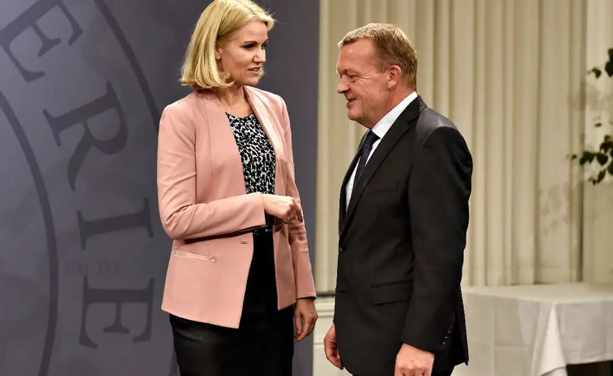
Helle Thorning-Schmidt, Danmarks første kvindelige statsminister 2011-15 sammen med Lars Løkke Rasmussen, statsminister 2009-11 og 2015-19. Foto: Keld Navntoft/Ritzau Scanpix.
Det betyder, at der bliver markant flere ældre i forhold til antallet af 15-64-årige, og at der bliver færre til at arbejde og betale for velfærden. Samtidig starter arbejdslivet senere på grund af mere uddannelse. Alt i alt mangler der arbejds kraft mange steder på det danske arbejdsmarked, selv om der stadig er ledige.
Mange forskellige reformer har derfor sigtet mod at øge arbejdsudbuddet for at få flere til at arbejde, tjene penge og betale skat. I den forbindelse er perioden, hvor man kan modtage understøttelse som arbejdsløs fra en arbejdsløsheds kasse (A-kasse), løbende blevet afkortet siden 1990’erne og har siden den sidste reform på området i 2010 ligget på to år.
Den såkaldte Tilbagetrækningsreform fra 2011 skulle sikre en hurtigere og større stigning i, hvor gamle folk typisk blev, når de trækker sig tilbage fra arbejds markedet. Endvidere er der i henholdsvis 2012 og 2013 aftalt reformer, der skal sikre, at færre kommer på førtidspension, og at færre er på kontanthjælp. Også en række skattereformer har haft det erklærede mål at øge udbuddet af arbejds kraft ved at sænke skatten på arbejdsindkomst. De studerende har gennem en række reformer fået tilskyndelse til at starte studierne tidligere og afslutte dem hurtigere.
1.13.6 SUNDHEDSKRISE
En væsentlig udfordring i årene 2020-22 var en global pandemi med Covid-19, som forårsagedes af det såkaldte coronavirus. Virusset blev opdaget i Kina i 2019. I Danmark blev første tilfælde registreret i februar 2020. Regeringen, Folketinget, Sundhedsstyrelsen med flere forsøgte at inddæmme sygdommen ved en række anbefalinger og restriktioner. De skulle sikre, at folk for eksempel ikke mødte for mange andre mennesker, at de holdt afstand til hinanden og at de vaskede hænder i sprit. Et hovedformål med restriktionerne har været at forhindre, at alt for mange blev smittet på én gang, således at sygehusene ikke blev overbelastede af mange indlæggelser.
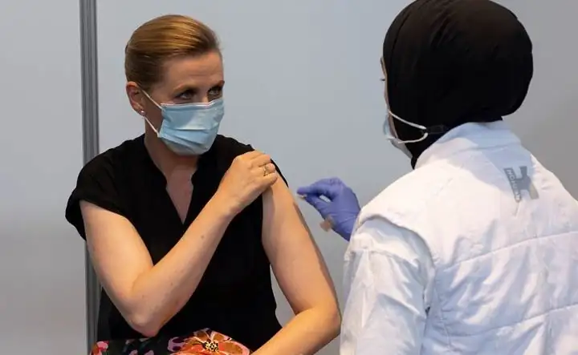
Statsminister Mette Frederiksen vaccineres mod coronavirus, 2021. Foto: Statsministeriet.
Derfor skulle man blandt andet bære mundbind i busser, tog og butikker. Man kunne heller ikke rejse så frit mellem Danmark og udlandet som normalt. Skolerne var desuden lukkede i perioder, og eleverne blev undervist hjemme via internettet. Derudover var mange restauranter, cafeer, museer og teatre lukkede i perioder, og fodboldkampe og anden sport foregik uden tilskuere, ligesom mange arbejdede hjemmefra.
Sundhedsvæsenet testede dagligt tusindvis af mennesker for at finde frem til de smittede, som derefter skulle blive hjemme noget tid, så de ikke smittede flere.
Coronavirusset har muteret (ændret sig) flere gange til stadig mere smitsomme varianter, og sygdommen har indtil videre ramt landet i tre store bølger.
Sundhedsstyrelsens anbefalinger i 2020 til at forebygge smitte imod coronavirus.
Et vigtigt middel til at bekæmpe sygdommen på langt sigt var at vaccinere befolkningen. Det tog kun cirka et år fra sygdommens udbrud at udvikle vacciner mod coronavirus, og i december 2020 blev den første dansker vaccineret. Siden da er de fleste (cirka 90 procent af Danmarks befolkning) blevet vaccineret med to eller tre stik.
Globalt blev der registreret næsten syv millioner mennesker døde med corona virus, herunder næsten 10.000 i Danmark.
1.13.7 NYT POLITISK OPBRUD
De seneste år er der kommet flere nye partier i dansk politik. Fem af disse – Liberal Alliance, Alternativet, Danmarksdemokraterne, Moderaterne og Borgernes Pari – er valgt til det nuværende Folketing.
Liberal Alliance blev valgt til Folketinget første gang i 2011. Partiet var opstået med en politik om flere skattelettelser, større økonomisk incitament til at arbejde, lavere offentlige udgifter og mere privat markedsøkonomi.
Alternativet har blandt andet lagt vægt på, at der skulle sættes større fokus på det grønne område. Partiet mener således, at der bør gøres mere for klimaet, naturen og miljøet. Alternativet blev valgt til Folketinget første gang i 2015.
Derudover opstod to partier – Danmarksdemokraterne og Moderaterne – kort før folketingsvalget i 2022. Begge blev dannet af politikere, som tidligere havde været ledende medlemmer af Venstre.
Danmarksdemokraterne blev stiftet af tidligere udlændinge- og integrations minister Inger Støjberg. Partiet er kritiske over for indvandringen til Danmark. Endvidere lægger Danmarksdemokraterne vægt på bedre muligheder for befolkningen i de mere tyndt befolkede områder af landet, som findes blandt andet i store dele af Jylland.
Moderaterne blev stiftet af tidligere statsminister og partiformand Lars Løkke Rasmussen. Partiet opfatter sig selv som et parti på midten af dansk politik og ønsker, at det politiske samarbejde skal foregå ”hen over midten” med delta gelse både af Socialdemokratiet og borgerlige partier.
I 2024 opstod Borgernes Parti. Navnet henviser til, at partiet mener, at magten skal tilbage til borgerne, fordi staten – gennem blandt andet for mange love og regler, for høje skatter og for meget digital overvågning – har fået for meget kontrol over borgernes liv.
Efter folketingsvalget i 2019 blev socialdemokraten Mette Frederiksen statsmi nister i en mindretalsregering, som kun bestod af Socialdemokratiet og med Radikale Venstre, SF og Enhedslisten som såkaldte støttepartier. Og med et nyt folketingsvalg i 2022 blev der dannet en flertalsregering med Mette Frederiksen som statsminister, som bestod af Socialdemokratiet, Venstre og Moderaterne.
I marts 2026 blev der afholdt endnu et folketingsvalg. Ved valget videreførtes tendensen til, at de gamle partier samlet set får færre stemmer, end de gjorde tidligere. Således fik Folketingets fem ældste partier – Socialdemokratiet, SF, Venstre, Konservative og Radikale Venstre – tilsammen 57 procent af stem merne. Det er klart mindre end 81 procent i 2001, 75 procent i 2011 og 72 procent i 2019. Næsten halvdelen af vælgerne (43 procent) stemte således på de syv yngste partier (Liberal Alliance, Dansk Folkeparti, Moderaterne, Enheds listen, Danmarksdemokraterne, Alternativet eller Borgernes Parti).
Efter valget er der blevet dannet endnu en regering med Mette Frederiksen som statsminister. Den består af Socialdemokratiet, SF, Moderaterne og Radikale Venstre.
OVERSIGT OVER PARTIER I FOLKETINGET, SOM BLEV VALGT VED FOLKETINGSVALGET 2026 I DANMARK (ANGIVET EFTER STEMMEANDEL):
• Socialdemokratiet (A) • SF (F) • Venstre (V) • Liberal Alliance (I) • Dansk Folkeparti (O) • Moderaterne (M) • Det Konservative Folkeparti (C) • Enhedslisten (Ø) • Radikale Venstre (B) • Danmarksdemokraterne (Æ) • Alternativet (Å) • Borgernes Parti (H)
Hertil kommer de i alt fire medlemmer af Folketinget, som er valgt i Grønland og på Færøerne.
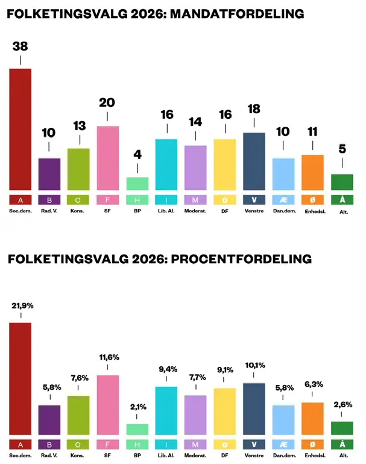